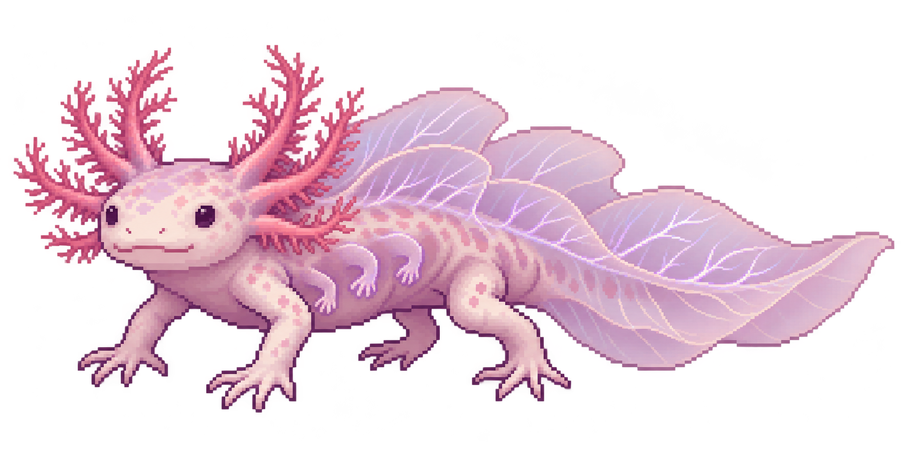
public/assets/animals/axolotl_mutant.png
E · 1254×1254 · 2537 KB
SHA-256 c5f0538991902f96…
직접 참조 False · 동적 경로 후보 False · 유사 후보 0
No static code reference found; verify runtime, CSS, save compatibility, and archive role.

public/assets/animals/axolotl_uncanny.png
E · 1254×1254 · 1022 KB
SHA-256 af4e8c00a6ab11b3…
직접 참조 False · 동적 경로 후보 False · 유사 후보 0
No static code reference found; verify runtime, CSS, save compatibility, and archive role.
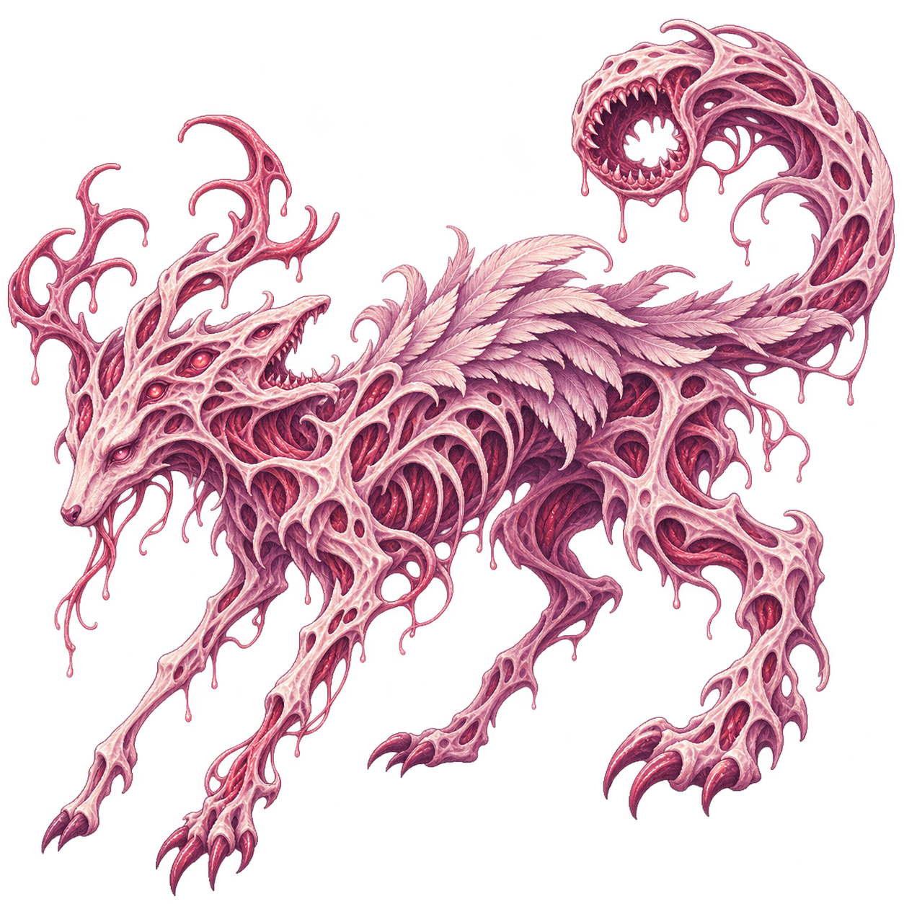
public/assets/animals/chimera_mutant.png
E · 1254×1254 · 2156 KB
SHA-256 ede5192f0242f39e…
직접 참조 False · 동적 경로 후보 False · 유사 후보 0
No static code reference found; verify runtime, CSS, save compatibility, and archive role.

public/assets/animals/chimera_uncanny.png
E · 1254×1254 · 1071 KB
SHA-256 1173626d6b89feee…
직접 참조 False · 동적 경로 후보 False · 유사 후보 0
No static code reference found; verify runtime, CSS, save compatibility, and archive role.

public/assets/animals/crow_mutant.png
D · 964×887 · 1187 KB
SHA-256 4a75cc152abebf05…
직접 참조 False · 동적 경로 후보 False · 유사 후보 0
Manual visual replacement candidate only; preserve active asset until a conforming image is generated, checked, and approved.
Contact-sheet review: composer/resonance identity is less immediately legible than other role-driven concepts. Inspect full size before replacement.

public/assets/animals/crow_uncanny.png
E · 863×887 · 780 KB
SHA-256 fc0b01f49e05ddc2…
직접 참조 False · 동적 경로 후보 False · 유사 후보 0
No static code reference found; verify runtime, CSS, save compatibility, and archive role.

public/assets/animals/deer_mutant.png
E · 1254×1254 · 1847 KB
SHA-256 e6cd4c6325dde8be…
직접 참조 False · 동적 경로 후보 False · 유사 후보 0
No static code reference found; verify runtime, CSS, save compatibility, and archive role.

public/assets/animals/deer_uncanny.png
E · 1254×1254 · 1010 KB
SHA-256 a29cb284ff3b445f…
직접 참조 False · 동적 경로 후보 False · 유사 후보 0
No static code reference found; verify runtime, CSS, save compatibility, and archive role.

public/assets/animals/fox_mutant.png
D · 1254×1254 · 1899 KB
SHA-256 4a3e2f844d0eb034…
직접 참조 False · 동적 경로 후보 False · 유사 후보 0
Manual visual replacement candidate only; preserve active asset until a conforming image is generated, checked, and approved.
Contact-sheet review: medical cross and rabbit marker conflict with the fox quartermaster identity. Preserve until a role-correct replacement is generated and approved.

public/assets/animals/fox_uncanny.png
E · 1254×1254 · 1527 KB
SHA-256 8cfbf1dca8ca3eea…
직접 참조 False · 동적 경로 후보 False · 유사 후보 0
No static code reference found; verify runtime, CSS, save compatibility, and archive role.
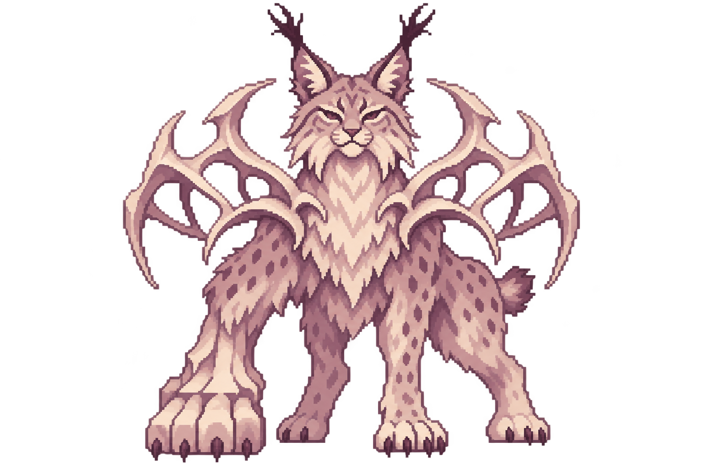
public/assets/animals/lynx_mutant.png
D · 1254×1254 · 2623 KB
SHA-256 e221a2a93b7a198d…
직접 참조 False · 동적 경로 후보 False · 유사 후보 0
Manual visual replacement candidate only; preserve active asset until a conforming image is generated, checked, and approved.
Contact-sheet review: lynx sensory/radar mutation is not clearly readable at contact-sheet scale. Inspect full size before replacement.
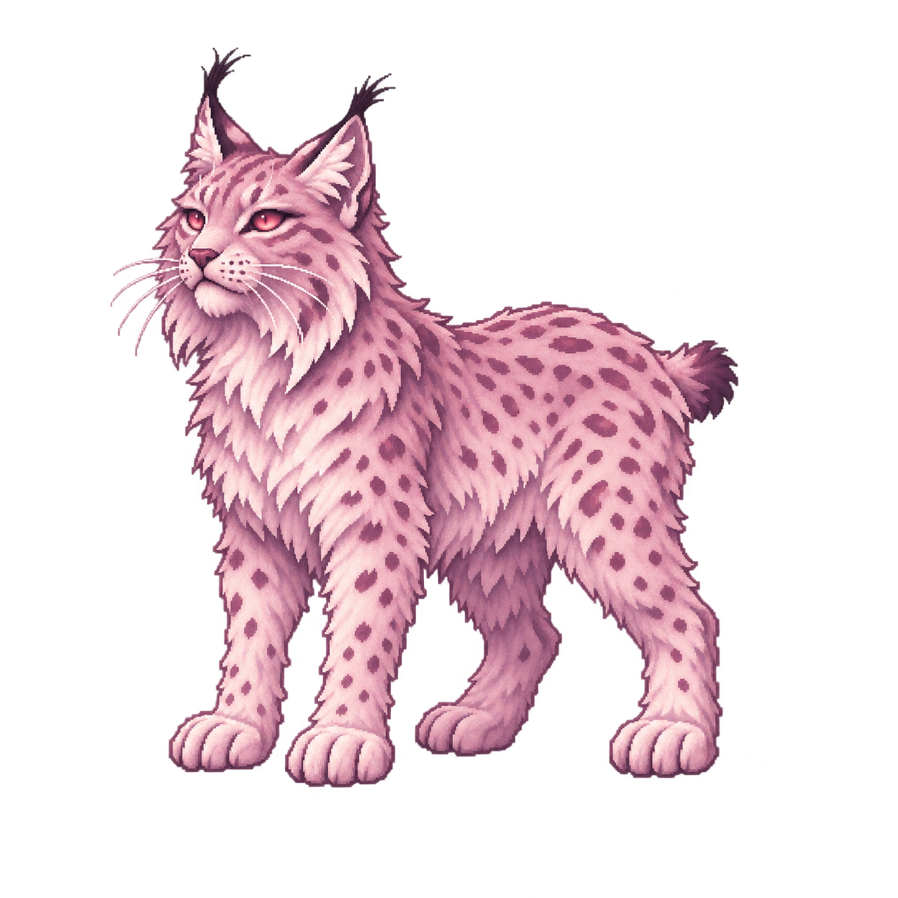
public/assets/animals/lynx_uncanny.png
E · 1254×1254 · 1131 KB
SHA-256 1dc640430300e11a…
직접 참조 False · 동적 경로 후보 False · 유사 후보 0
No static code reference found; verify runtime, CSS, save compatibility, and archive role.

public/assets/animals/m00_normal.png
D · 1254×1254 · 1028 KB
SHA-256 9fbb759da5b53828…
직접 참조 True · 동적 경로 후보 False · 유사 후보 1
Manual visual replacement candidate only; preserve active asset until a conforming image is generated, checked, and approved.
Contact-sheet review: smoother, illustration-like shading than the other animal sprites; possible pixel-density/style mismatch. Preserve until a true replacement is generated and approved.
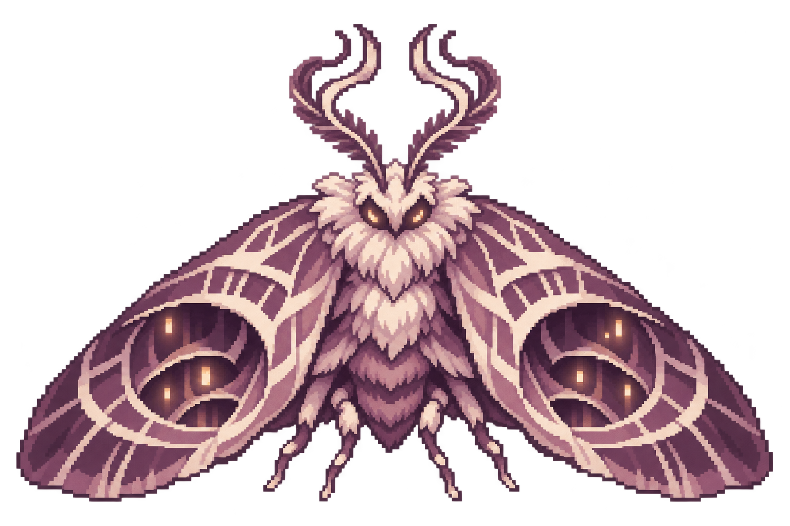
public/assets/animals/moth_mutant.png
E · 1254×1254 · 2619 KB
SHA-256 c313d0e55bec93ef…
직접 참조 False · 동적 경로 후보 False · 유사 후보 0
No static code reference found; verify runtime, CSS, save compatibility, and archive role.
public/assets/animals/moth_uncanny.png
E · 1536×1024 · 1872 KB
SHA-256 06dec72d2eef07d7…
직접 참조 False · 동적 경로 후보 False · 유사 후보 0
No static code reference found; verify runtime, CSS, save compatibility, and archive role.
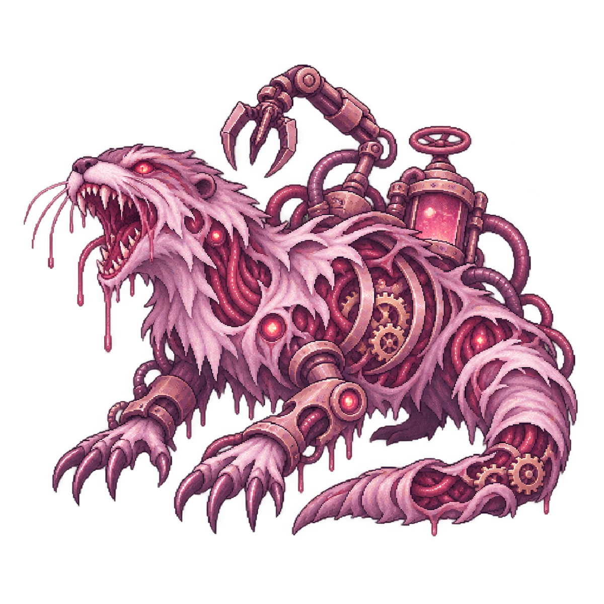
public/assets/animals/otter_mutant.png
E · 1200×1200 · 1396 KB
SHA-256 3ca7062e7e2b16c1…
직접 참조 False · 동적 경로 후보 False · 유사 후보 0
No static code reference found; verify runtime, CSS, save compatibility, and archive role.
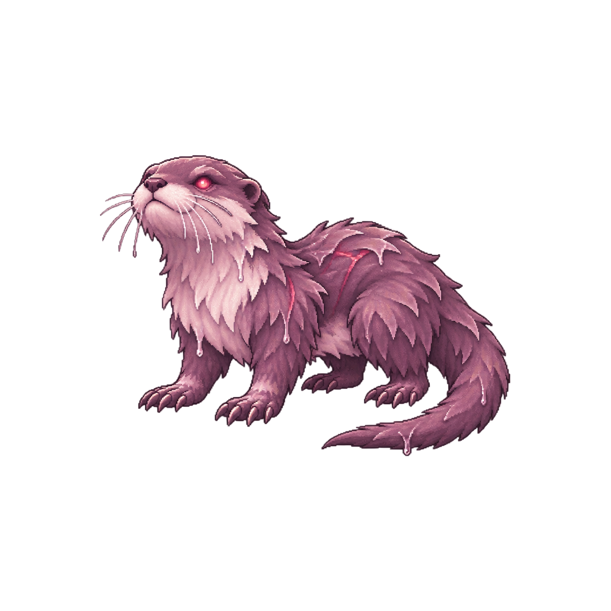
public/assets/animals/otter_uncanny.png
E · 1200×1200 · 596 KB
SHA-256 5cd2ff5ddf9ea8ab…
직접 참조 False · 동적 경로 후보 False · 유사 후보 0
No static code reference found; verify runtime, CSS, save compatibility, and archive role.

public/assets/animals/owl_mutant.png
E · 1254×1254 · 2575 KB
SHA-256 c36cbe3c27ef4bda…
직접 참조 False · 동적 경로 후보 False · 유사 후보 0
No static code reference found; verify runtime, CSS, save compatibility, and archive role.
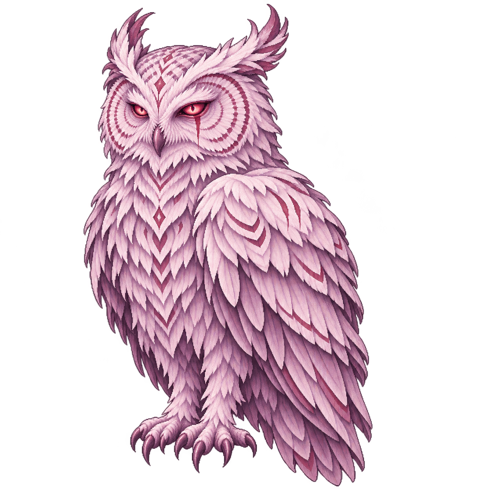
public/assets/animals/owl_uncanny.png
E · 1254×1254 · 1618 KB
SHA-256 f1c9c18a57f7e5b6…
직접 참조 False · 동적 경로 후보 False · 유사 후보 0
No static code reference found; verify runtime, CSS, save compatibility, and archive role.
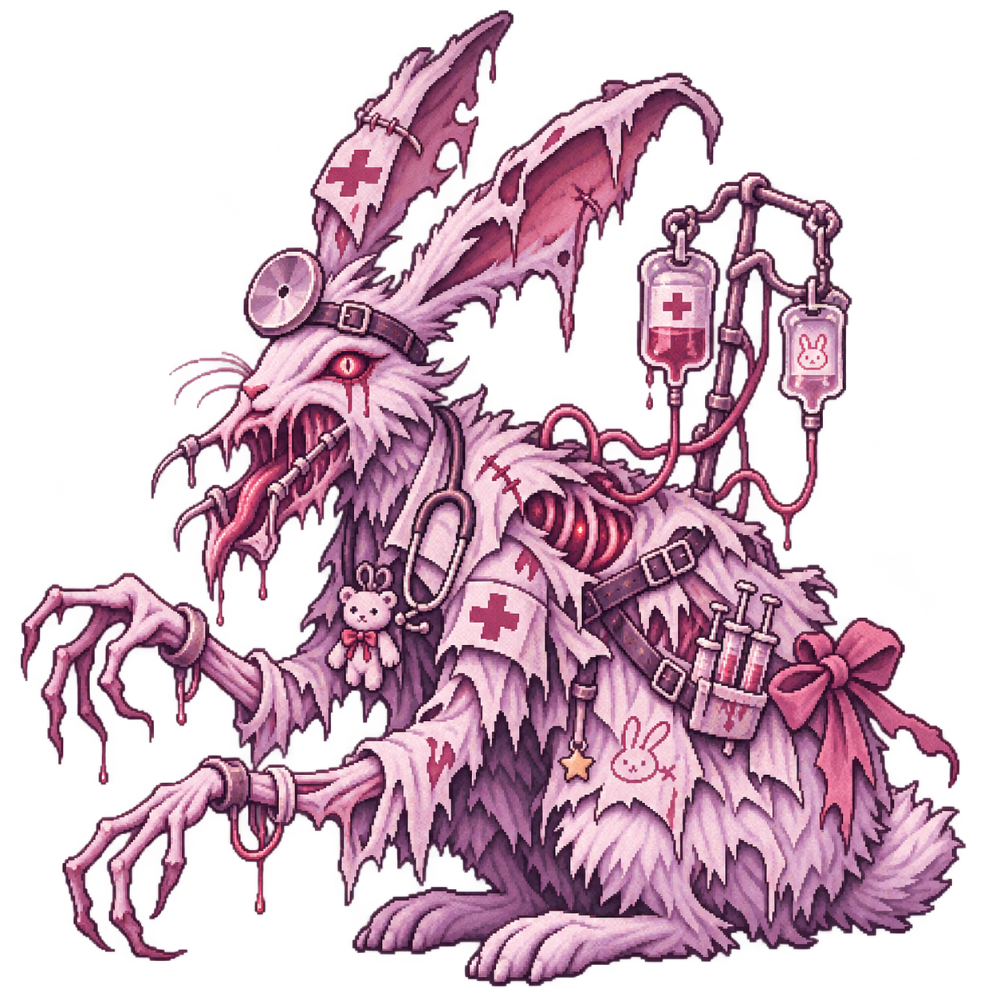
public/assets/animals/rabbit_mutant.png
E · 1254×1254 · 2217 KB
SHA-256 2c5269e983afd147…
직접 참조 False · 동적 경로 후보 False · 유사 후보 0
No static code reference found; verify runtime, CSS, save compatibility, and archive role.

public/assets/animals/rabbit_uncanny.png
E · 1254×1254 · 1400 KB
SHA-256 a866573722e36ce0…
직접 참조 False · 동적 경로 후보 False · 유사 후보 0
No static code reference found; verify runtime, CSS, save compatibility, and archive role.
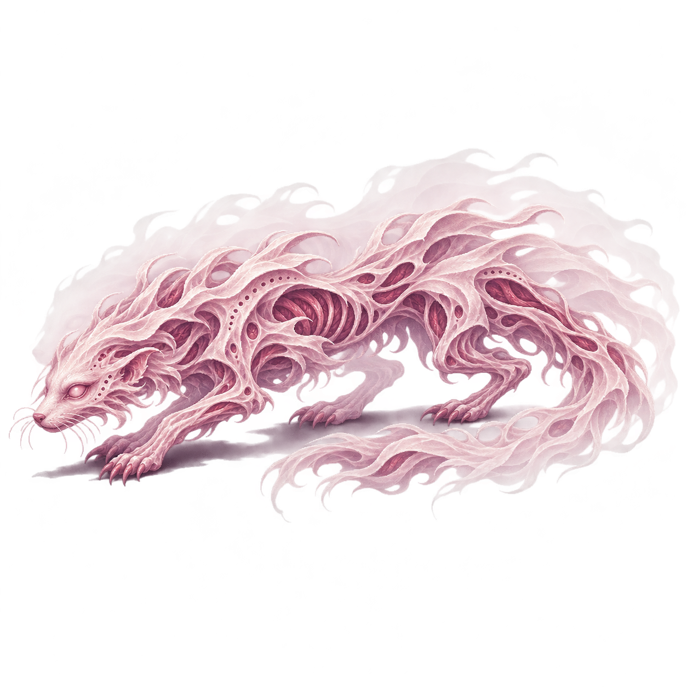
public/assets/animals/specter_mutant.png
E · 1254×1254 · 1824 KB
SHA-256 de4eadf2c9f2ea22…
직접 참조 False · 동적 경로 후보 False · 유사 후보 0
No static code reference found; verify runtime, CSS, save compatibility, and archive role.
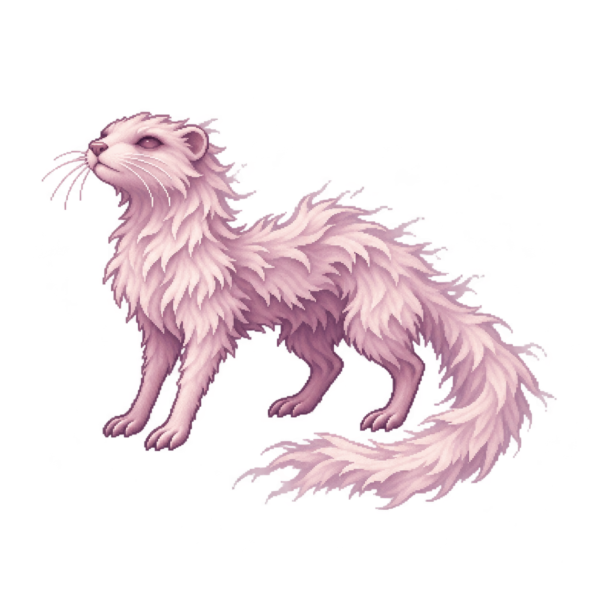
public/assets/animals/specter_uncanny.png
E · 1254×1254 · 945 KB
SHA-256 864abab0f1626d9c…
직접 참조 False · 동적 경로 후보 False · 유사 후보 0
No static code reference found; verify runtime, CSS, save compatibility, and archive role.
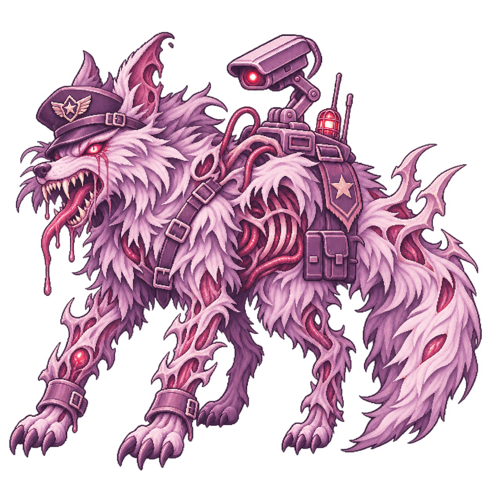
public/assets/animals/wolf_mutant.png
E · 1396×1396 · 2365 KB
SHA-256 567a38b834746623…
직접 참조 False · 동적 경로 후보 False · 유사 후보 0
No static code reference found; verify runtime, CSS, save compatibility, and archive role.

public/assets/animals/wolf_uncanny.png
E · 1396×1396 · 1498 KB
SHA-256 da94e3a837e9007b…
직접 참조 False · 동적 경로 후보 False · 유사 후보 0
No static code reference found; verify runtime, CSS, save compatibility, and archive role.
public/assets/archive/bg_origin_lab_family_photo.webp
E · 1672×941 · 789 KB
SHA-256 08e7fd73802b0748…
직접 참조 False · 동적 경로 후보 False · 유사 후보 0
No static code reference found; verify runtime, CSS, save compatibility, and archive role.
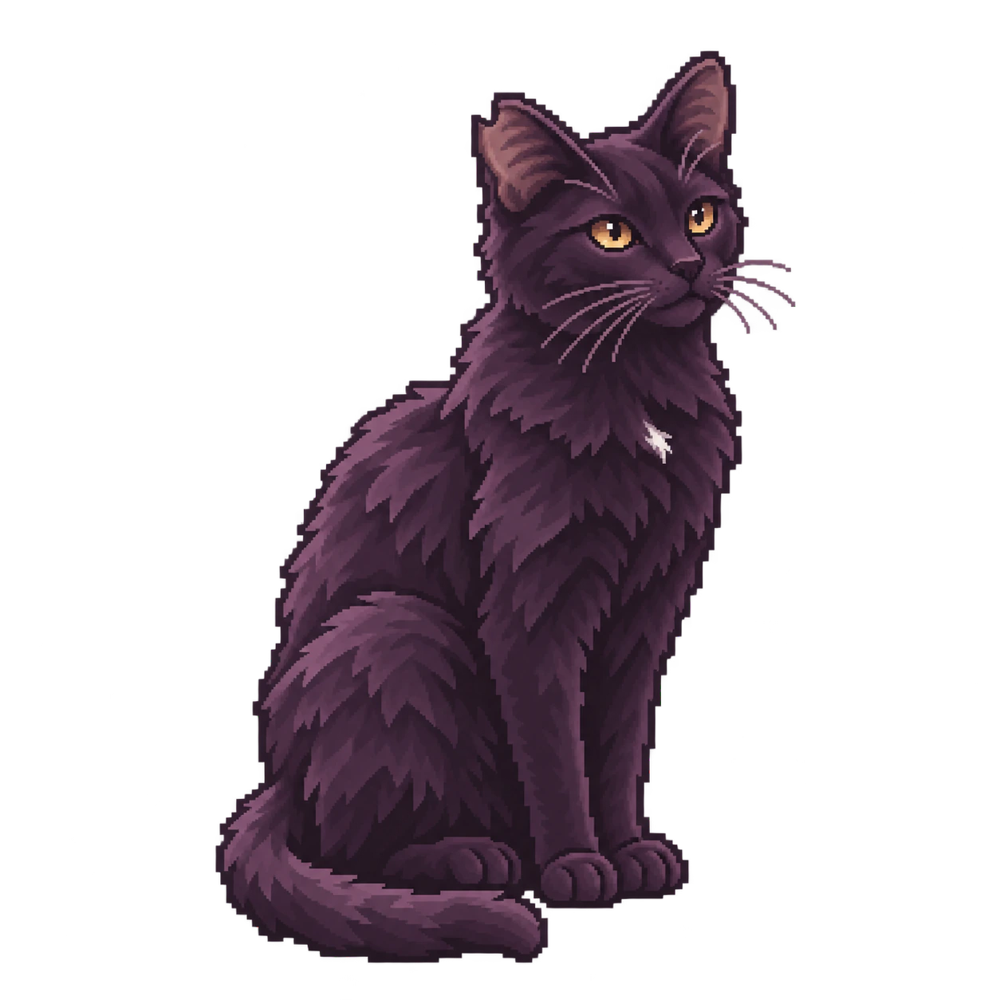
public/assets/archive/m00_normal_pre_pixel.webp
C · 1254×1254 · 107 KB
SHA-256 691f89cb18773d08…
직접 참조 False · 동적 경로 후보 False · 유사 후보 1
Perceptual similarity candidate; inspect full-size images and intended variant before deciding.
public/assets/archive/origin-zero-scenes/scene_ark_recall_legacy.webp
E · 1672×941 · 427 KB
SHA-256 9bee8b3b2bb41fcd…
직접 참조 False · 동적 경로 후보 False · 유사 후보 0
No static code reference found; verify runtime, CSS, save compatibility, and archive role.

public/assets/archive/origin-zero-scenes/scene_farewell_legacy.png
E · 1672×941 · 3157 KB
SHA-256 71cd924c9f1ac2f5…
직접 참조 False · 동적 경로 후보 False · 유사 후보 0
No static code reference found; verify runtime, CSS, save compatibility, and archive role.
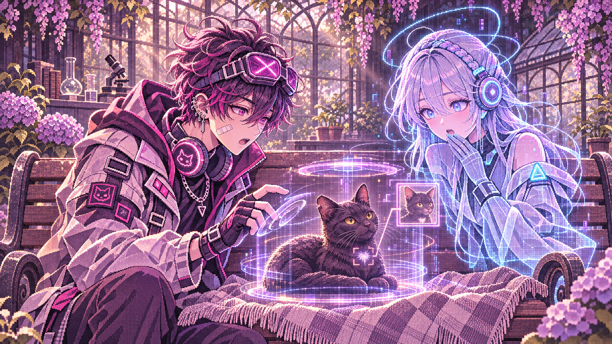
public/assets/archive/origin-zero-scenes/scene_m00_positive_legacy.webp
E · 1672×941 · 717 KB
SHA-256 a7a480d1e0d5dc2e…
직접 참조 False · 동적 경로 후보 False · 유사 후보 0
No static code reference found; verify runtime, CSS, save compatibility, and archive role.
public/assets/archive/origin-zero-scenes/scene_m00_protect_legacy.webp
E · 1672×941 · 627 KB
SHA-256 662585d7cbf4dee6…
직접 참조 False · 동적 경로 후보 False · 유사 후보 0
No static code reference found; verify runtime, CSS, save compatibility, and archive role.
public/assets/archive/origin-zero-scenes/scene_m00_transfer_legacy.webp
E · 1672×941 · 429 KB
SHA-256 ff6fbba433df0054…
직접 참조 False · 동적 경로 후보 False · 유사 후보 0
No static code reference found; verify runtime, CSS, save compatibility, and archive role.

public/assets/backgrounds/dawn.webp
F · 1671×941 · 604 KB
SHA-256 25b99734b88c5d25…
직접 참조 False · 동적 경로 후보 True · 유사 후보 0
Possible dynamically assembled path; inspect runtime path construction.

public/assets/backgrounds/gate.webp
A · 1672×941 · 579 KB
SHA-256 962cd63031bb6ce5…
직접 참조 True · 동적 경로 후보 False · 유사 후보 0
Referenced asset; keep unless an intentional replacement is reviewed.
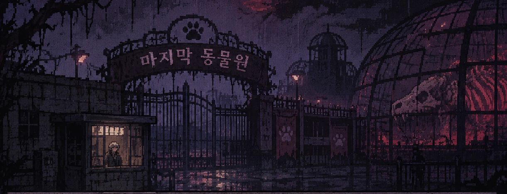
public/assets/backgrounds/hero-gate.webp
A · 1672×941 · 516 KB
SHA-256 d607dfbbc02e8cac…
직접 참조 True · 동적 경로 후보 False · 유사 후보 0
Referenced asset; keep unless an intentional replacement is reviewed.

public/assets/backgrounds/hidden-photo.webp
F · 1671×941 · 419 KB
SHA-256 30618212974ca9b0…
직접 참조 False · 동적 경로 후보 True · 유사 후보 0
Possible dynamically assembled path; inspect runtime path construction.

public/assets/backgrounds/laboratory.webp
A · 1672×941 · 458 KB
SHA-256 4b8f6912d1a7d108…
직접 참조 True · 동적 경로 후보 False · 유사 후보 0
Referenced asset; keep unless an intentional replacement is reviewed.
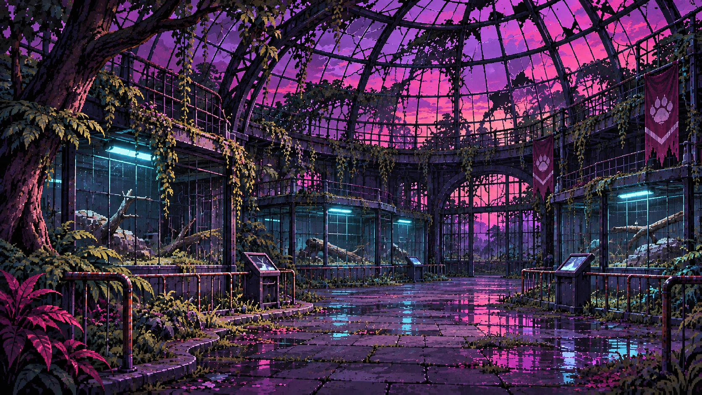
public/assets/backgrounds/sanctuary.webp
F · 1672×941 · 624 KB
SHA-256 5e117f76366e5b84…
직접 참조 False · 동적 경로 후보 True · 유사 후보 0
Possible dynamically assembled path; inspect runtime path construction.
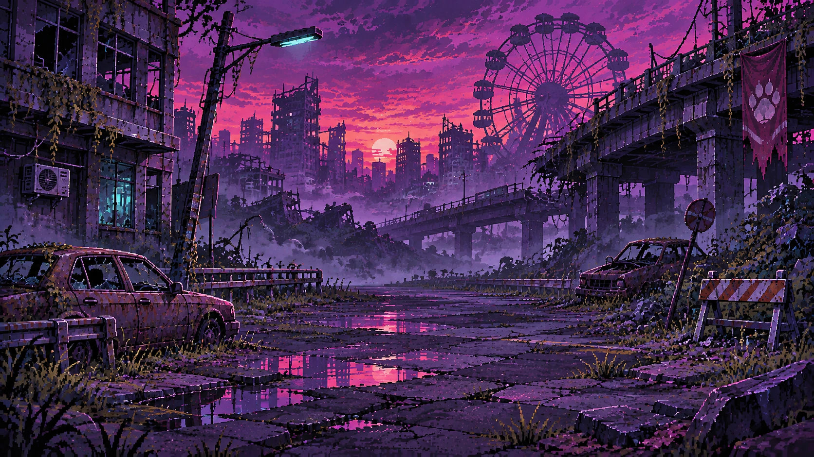
public/assets/backgrounds/wasteland.webp
F · 1672×941 · 576 KB
SHA-256 67c1c3d93118c425…
직접 참조 False · 동적 경로 후보 True · 유사 후보 0
Possible dynamically assembled path; inspect runtime path construction.
public/assets/characters/daughter_portrait.webp
E · 1086×1448 · 699 KB
SHA-256 ac08f124094468ad…
직접 참조 False · 동적 경로 후보 False · 유사 후보 0
No static code reference found; verify runtime, CSS, save compatibility, and archive role.
public/assets/characters/eve_anxious.webp
C · 1086×1448 · 434 KB
SHA-256 38599c052ed09172…
직접 참조 False · 동적 경로 후보 False · 유사 후보 3
Perceptual similarity candidate; inspect full-size images and intended variant before deciding.
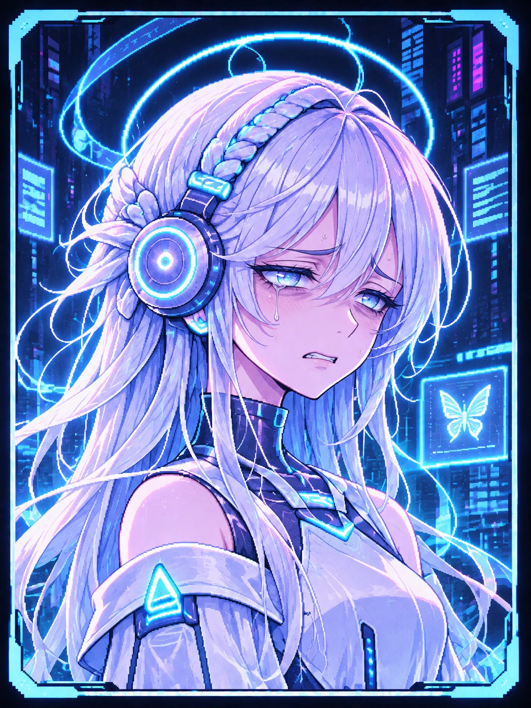
public/assets/characters/eve_critical.webp
C · 1086×1448 · 433 KB
SHA-256 479b359712b3e264…
직접 참조 False · 동적 경로 후보 False · 유사 후보 3
Perceptual similarity candidate; inspect full-size images and intended variant before deciding.
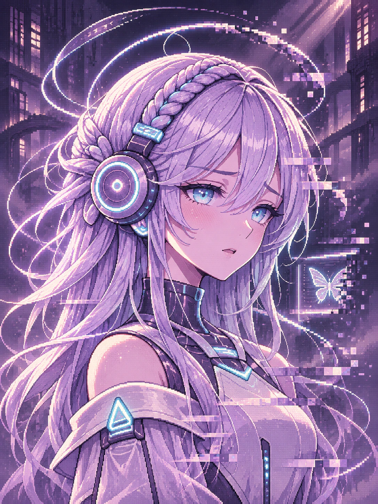
public/assets/characters/eve_glitch.webp
E · 1086×1448 · 547 KB
SHA-256 5bc56f7b7c9de685…
직접 참조 False · 동적 경로 후보 False · 유사 후보 0
No static code reference found; verify runtime, CSS, save compatibility, and archive role.
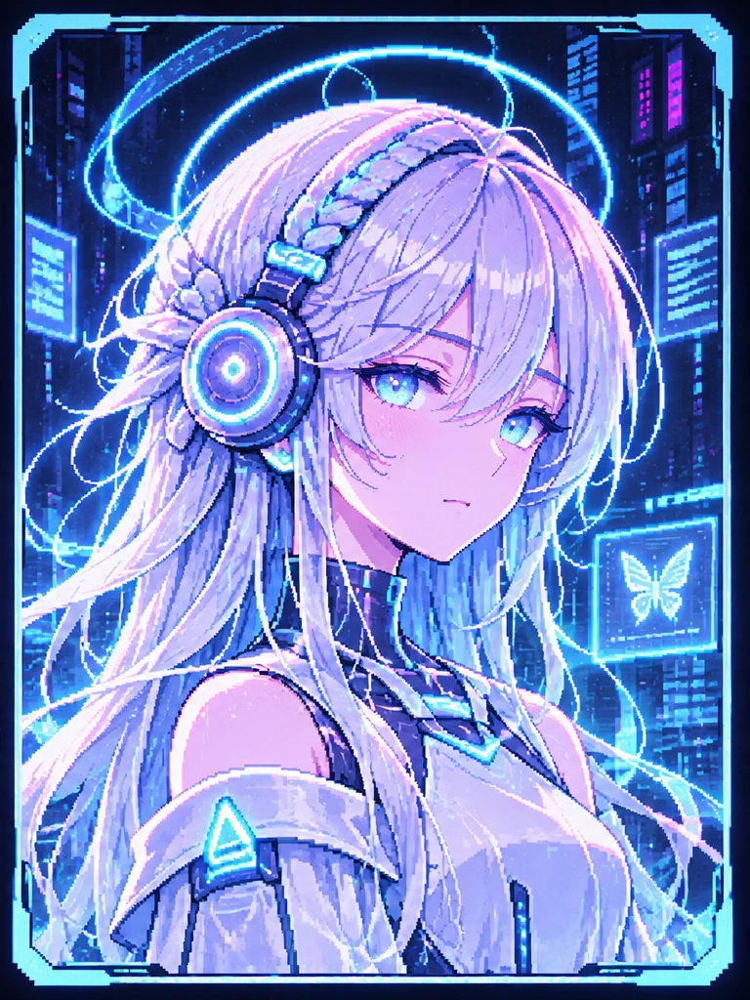
public/assets/characters/eve_hologram.webp
A · 768×1024 · 281 KB
SHA-256 4fb795b1cbb89840…
직접 참조 True · 동적 경로 후보 False · 유사 후보 3
Referenced asset; keep unless an intentional replacement is reviewed.
public/assets/characters/eve_resolve.webp
C · 1086×1448 · 424 KB
SHA-256 44dffc7b935f584f…
직접 참조 False · 동적 경로 후보 False · 유사 후보 3
Perceptual similarity candidate; inspect full-size images and intended variant before deciding.
public/assets/characters/eve_revelation.webp
E · 1086×1448 · 518 KB
SHA-256 729f97925d38f39c…
직접 참조 False · 동적 경로 후보 False · 유사 후보 0
No static code reference found; verify runtime, CSS, save compatibility, and archive role.
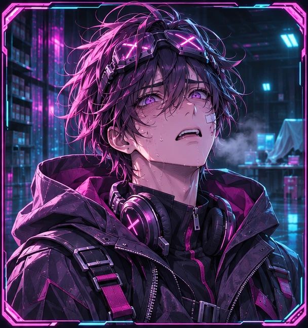
public/assets/characters/protagonist_anxious.webp
C · 768×1024 · 216 KB
SHA-256 1027516a60db6d70…
직접 참조 False · 동적 경로 후보 False · 유사 후보 7
Perceptual similarity candidate; inspect full-size images and intended variant before deciding.
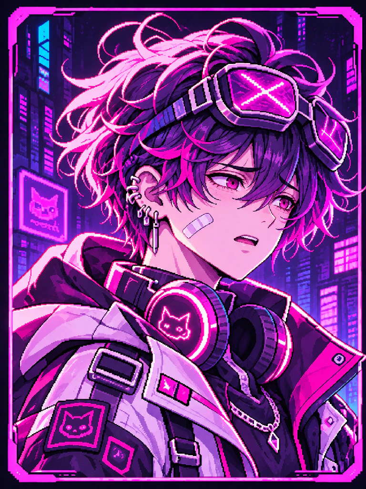
public/assets/characters/protagonist_anxious_v73_768.webp
C · 768×1024 · 283 KB
SHA-256 535807f5b48e1693…
직접 참조 False · 동적 경로 후보 False · 유사 후보 4
Perceptual similarity candidate; inspect full-size images and intended variant before deciding.
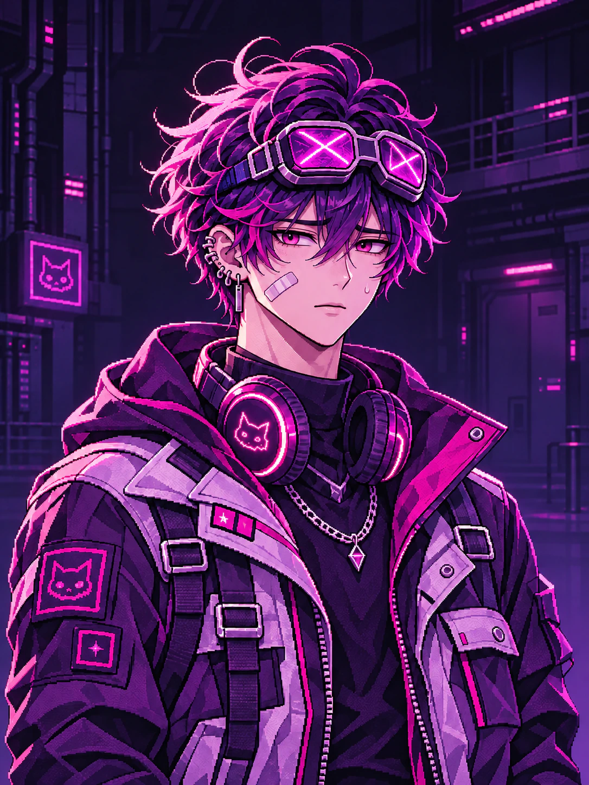
public/assets/characters/protagonist_anxious_v74_source.webp
C · 1086×1448 · 351 KB
SHA-256 aee5d39b30b47b55…
직접 참조 False · 동적 경로 후보 False · 유사 후보 7
Perceptual similarity candidate; inspect full-size images and intended variant before deciding.
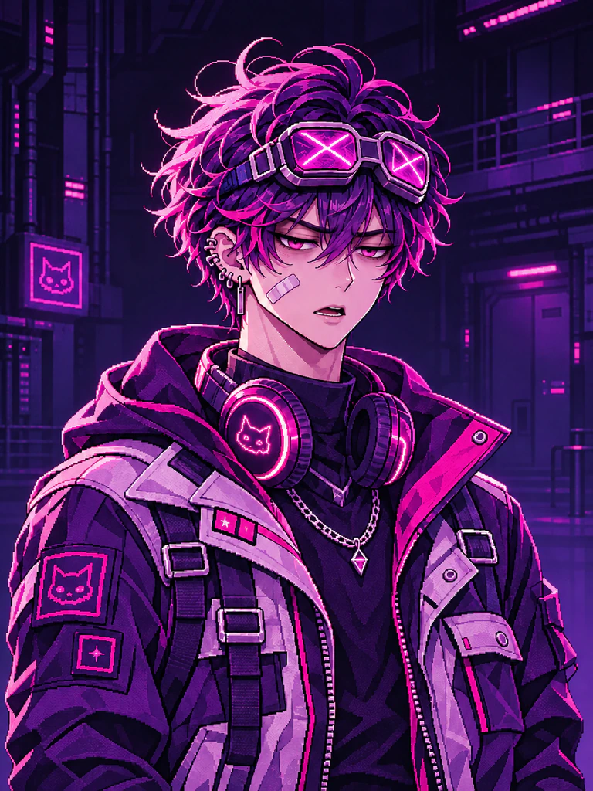
public/assets/characters/protagonist_critical.webp
C · 768×1024 · 220 KB
SHA-256 26c7d9f0291c7c80…
직접 참조 False · 동적 경로 후보 False · 유사 후보 7
Perceptual similarity candidate; inspect full-size images and intended variant before deciding.
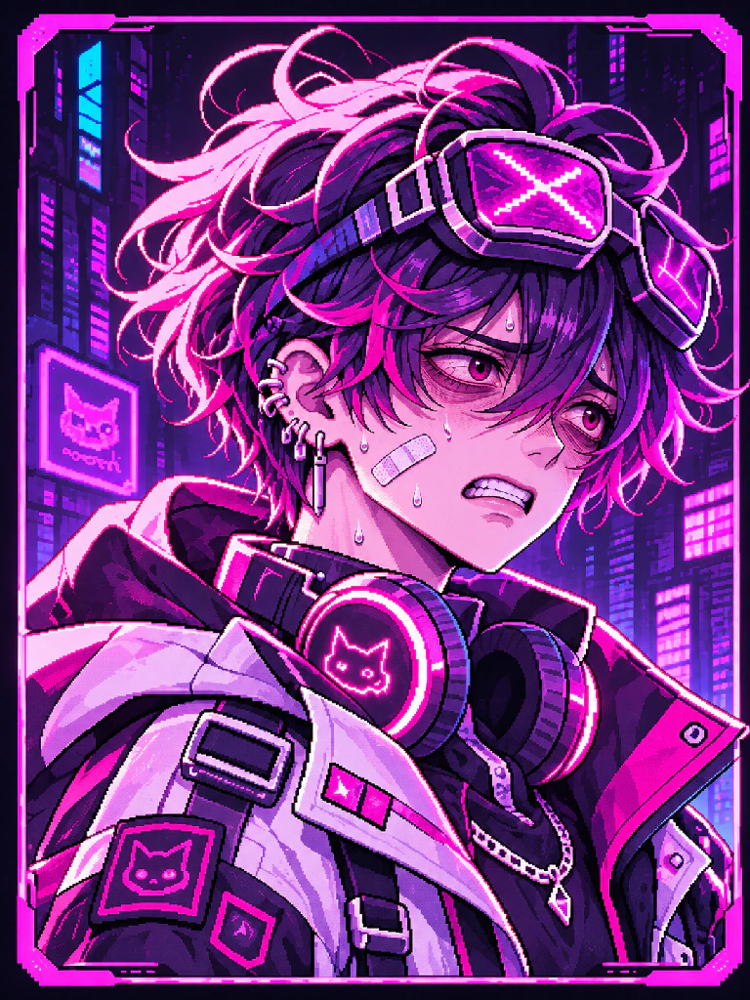
public/assets/characters/protagonist_critical_v73_768.webp
C · 768×1024 · 302 KB
SHA-256 41d9ec9d57a6296c…
직접 참조 False · 동적 경로 후보 False · 유사 후보 4
Perceptual similarity candidate; inspect full-size images and intended variant before deciding.
public/assets/characters/protagonist_critical_v74_source.webp
C · 1086×1448 · 356 KB
SHA-256 274dbde9664d6e29…
직접 참조 False · 동적 경로 후보 False · 유사 후보 7
Perceptual similarity candidate; inspect full-size images and intended variant before deciding.
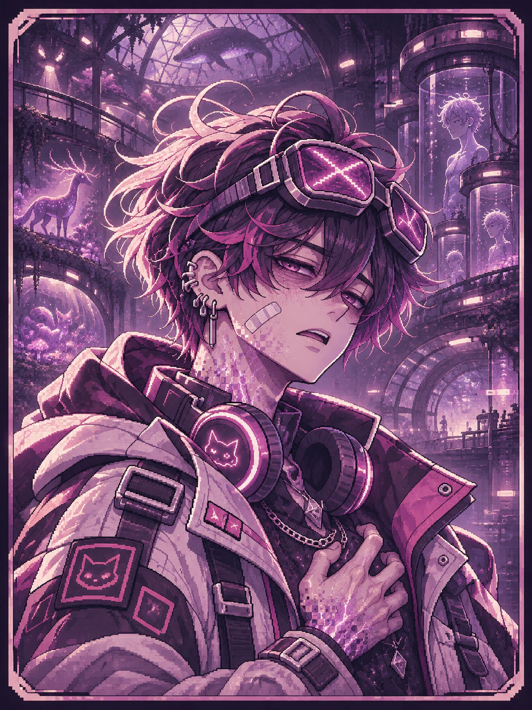
public/assets/characters/protagonist_decline.webp
E · 1086×1448 · 500 KB
SHA-256 270002221262138f…
직접 참조 False · 동적 경로 후보 False · 유사 후보 0
No static code reference found; verify runtime, CSS, save compatibility, and archive role.
public/assets/characters/protagonist_final.webp
E · 1086×1448 · 535 KB
SHA-256 2e5b53d133aefafc…
직접 참조 False · 동적 경로 후보 False · 유사 후보 0
No static code reference found; verify runtime, CSS, save compatibility, and archive role.
public/assets/characters/protagonist_neutral.png
A · 768×1024 · 1812 KB
SHA-256 81c588d82095594e…
직접 참조 True · 동적 경로 후보 False · 유사 후보 7
Referenced asset; keep unless an intentional replacement is reviewed.

public/assets/characters/protagonist_neutral.webp
C · 768×1024 · 271 KB
SHA-256 6418777448b990a0…
직접 참조 False · 동적 경로 후보 True · 유사 후보 4
Perceptual similarity candidate; inspect full-size images and intended variant before deciding.
public/assets/characters/protagonist_neutral_v73_768.webp
C · 768×1024 · 297 KB
SHA-256 afd1ebf1d2990983…
직접 참조 False · 동적 경로 후보 False · 유사 후보 4
Perceptual similarity candidate; inspect full-size images and intended variant before deciding.
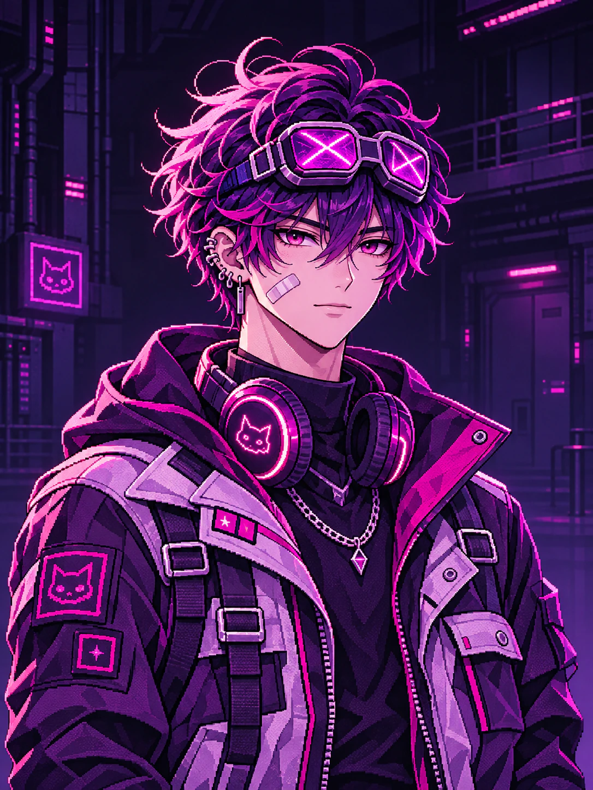
public/assets/characters/protagonist_neutral_v74_source.webp
C · 1086×1448 · 371 KB
SHA-256 0783f49b6aa0f2e5…
직접 참조 False · 동적 경로 후보 False · 유사 후보 7
Perceptual similarity candidate; inspect full-size images and intended variant before deciding.
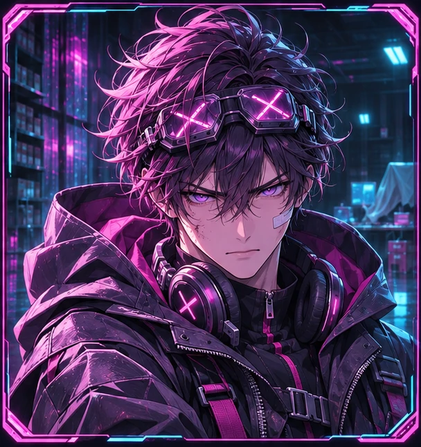
public/assets/characters/protagonist_resolve.webp
C · 768×1024 · 220 KB
SHA-256 527fcd8bbde45e96…
직접 참조 False · 동적 경로 후보 False · 유사 후보 7
Perceptual similarity candidate; inspect full-size images and intended variant before deciding.
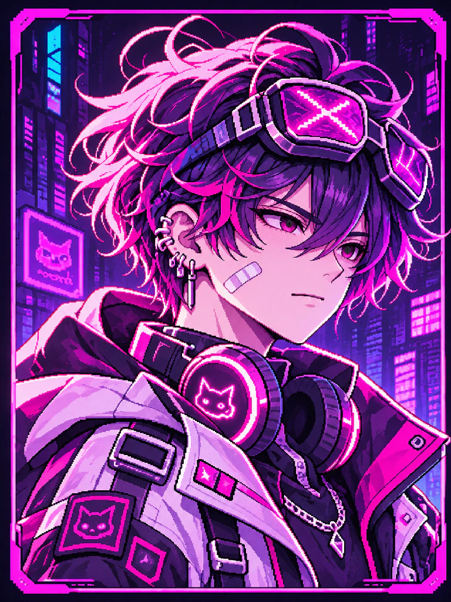
public/assets/characters/protagonist_resolve_v73_768.webp
C · 768×1024 · 286 KB
SHA-256 de62fa5822c03da5…
직접 참조 False · 동적 경로 후보 False · 유사 후보 4
Perceptual similarity candidate; inspect full-size images and intended variant before deciding.
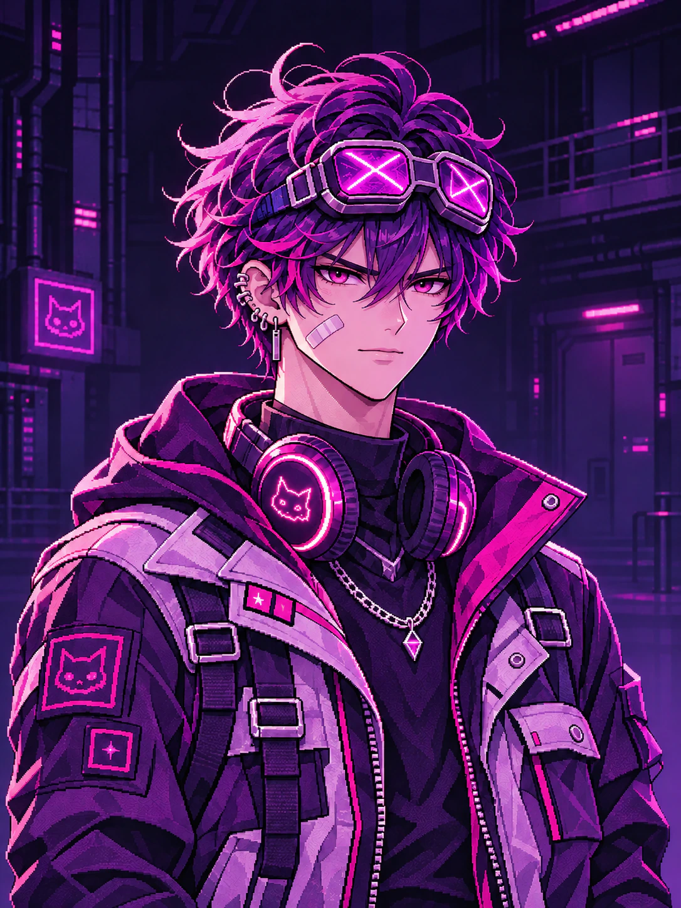
public/assets/characters/protagonist_resolve_v74_source.webp
C · 1086×1448 · 358 KB
SHA-256 314bd1245c5b7be1…
직접 참조 False · 동적 경로 후보 False · 유사 후보 7
Perceptual similarity candidate; inspect full-size images and intended variant before deciding.
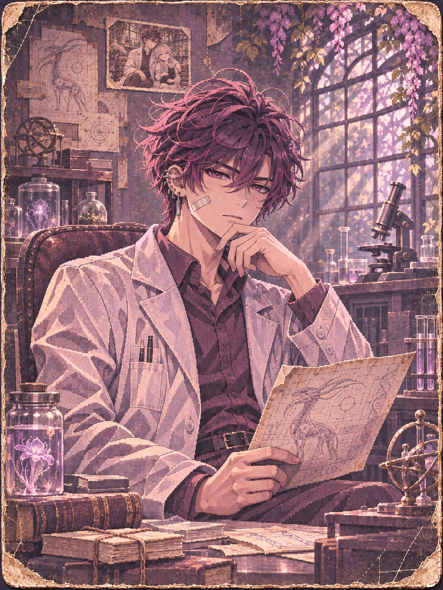
public/assets/characters/scientist_archive.webp
E · 1086×1448 · 664 KB
SHA-256 7752c53cc6672340…
직접 참조 False · 동적 경로 후보 False · 유사 후보 0
No static code reference found; verify runtime, CSS, save compatibility, and archive role.
public/assets/characters/scientist_obsession.webp
A · 1086×1448 · 647 KB
SHA-256 c6e1a5a254c9b052…
직접 참조 True · 동적 경로 후보 False · 유사 후보 0
Referenced asset; keep unless an intentional replacement is reviewed.
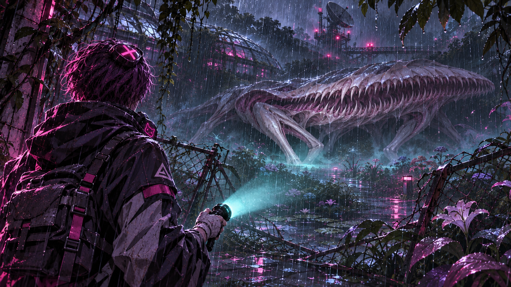
public/assets/cinematics/field-threats/mutant1/reveal.png
A · 1672×941 · 3110 KB
SHA-256 489ca5c6919aaa61…
직접 참조 True · 동적 경로 후보 False · 유사 후보 0
Referenced asset; keep unless an intentional replacement is reviewed.
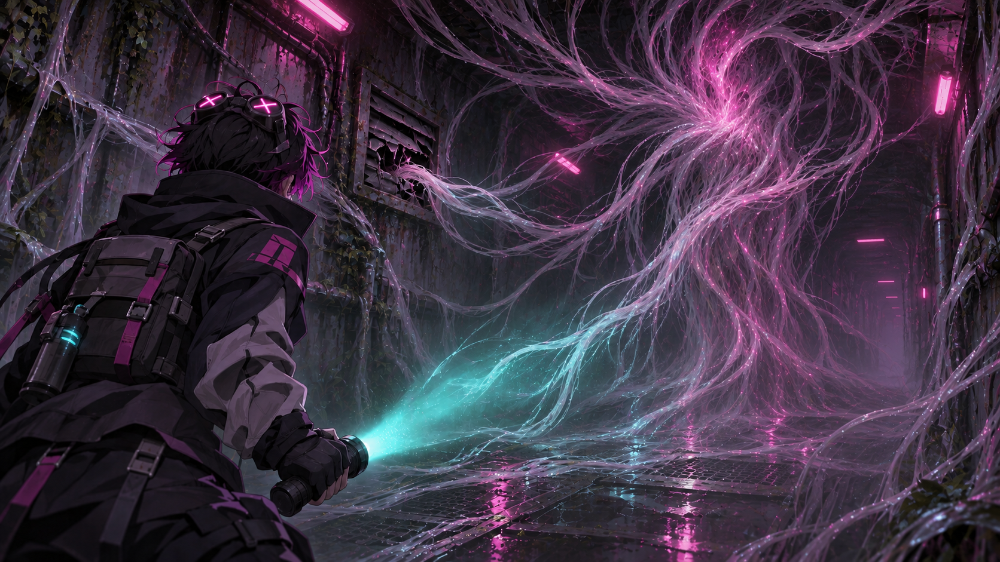
public/assets/cinematics/field-threats/mutant10/reveal.png
A · 1672×941 · 2657 KB
SHA-256 d78fae5511235124…
직접 참조 True · 동적 경로 후보 False · 유사 후보 0
Referenced asset; keep unless an intentional replacement is reviewed.
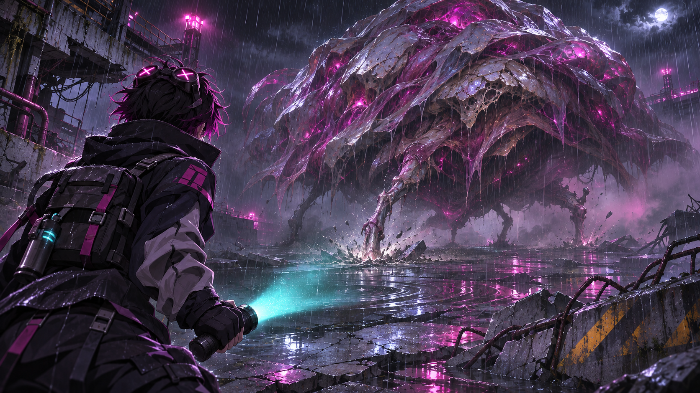
public/assets/cinematics/field-threats/mutant11/reveal.png
A · 1672×941 · 2966 KB
SHA-256 571967da68ca09e1…
직접 참조 True · 동적 경로 후보 False · 유사 후보 0
Referenced asset; keep unless an intentional replacement is reviewed.
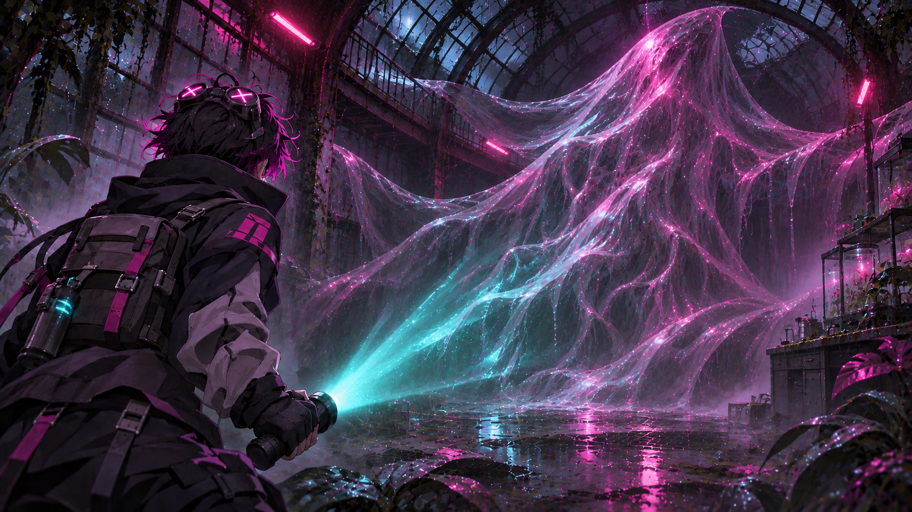
public/assets/cinematics/field-threats/mutant12/reveal.png
A · 1672×941 · 2610 KB
SHA-256 f4273074c2ac1fbb…
직접 참조 True · 동적 경로 후보 False · 유사 후보 0
Referenced asset; keep unless an intentional replacement is reviewed.
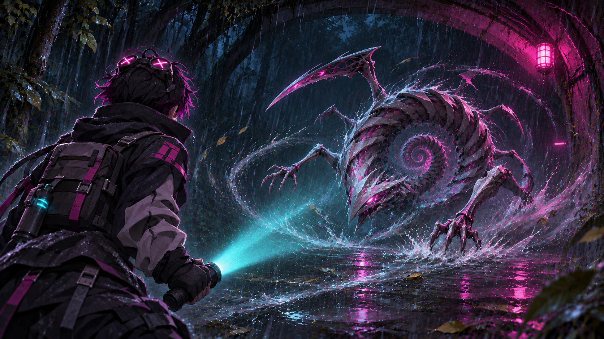
public/assets/cinematics/field-threats/mutant13/reveal.png
A · 1672×941 · 2830 KB
SHA-256 4c277e739af3b11c…
직접 참조 True · 동적 경로 후보 False · 유사 후보 0
Referenced asset; keep unless an intentional replacement is reviewed.
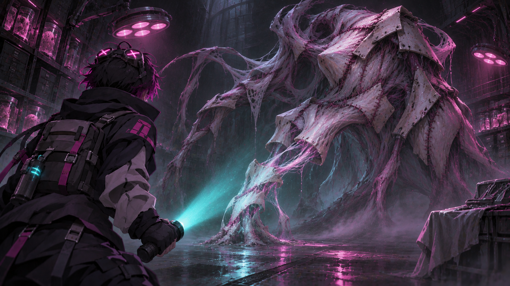
public/assets/cinematics/field-threats/mutant14/reveal.png
A · 1672×941 · 2397 KB
SHA-256 56a51bd089a1ebe1…
직접 참조 True · 동적 경로 후보 False · 유사 후보 0
Referenced asset; keep unless an intentional replacement is reviewed.
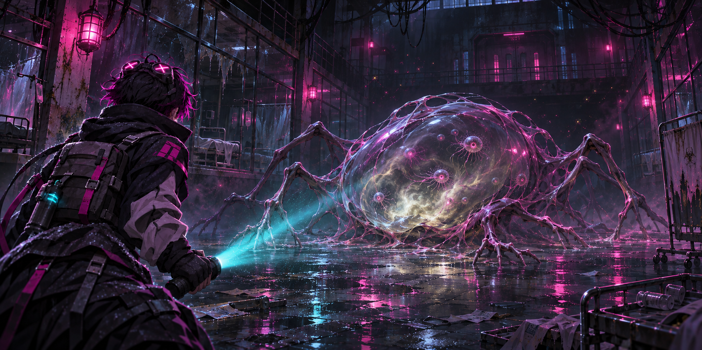
public/assets/cinematics/field-threats/mutant15/reveal.png
A · 1774×887 · 2674 KB
SHA-256 cda1ce8eef9e9aec…
직접 참조 True · 동적 경로 후보 False · 유사 후보 0
Referenced asset; keep unless an intentional replacement is reviewed.
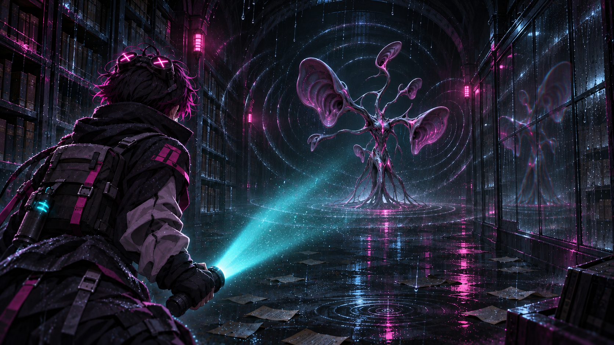
public/assets/cinematics/field-threats/mutant16/reveal.png
A · 1672×941 · 2563 KB
SHA-256 4802283739bf17d9…
직접 참조 True · 동적 경로 후보 False · 유사 후보 0
Referenced asset; keep unless an intentional replacement is reviewed.
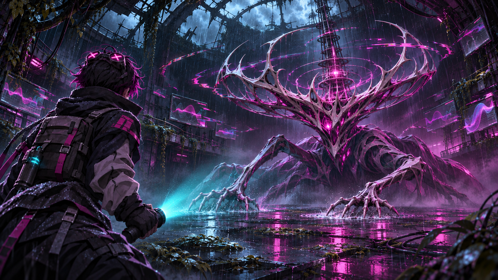
public/assets/cinematics/field-threats/mutant17/reveal.png
A · 1672×941 · 2932 KB
SHA-256 af24c8690545140b…
직접 참조 True · 동적 경로 후보 False · 유사 후보 0
Referenced asset; keep unless an intentional replacement is reviewed.
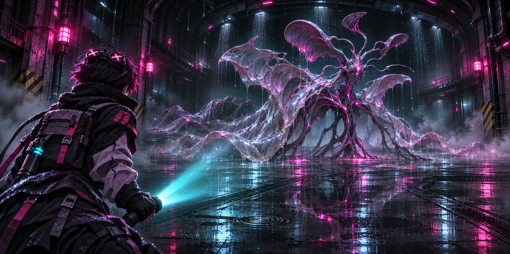
public/assets/cinematics/field-threats/mutant18/reveal.png
A · 1774×887 · 2861 KB
SHA-256 fe553a6b63a1d8f4…
직접 참조 True · 동적 경로 후보 False · 유사 후보 0
Referenced asset; keep unless an intentional replacement is reviewed.
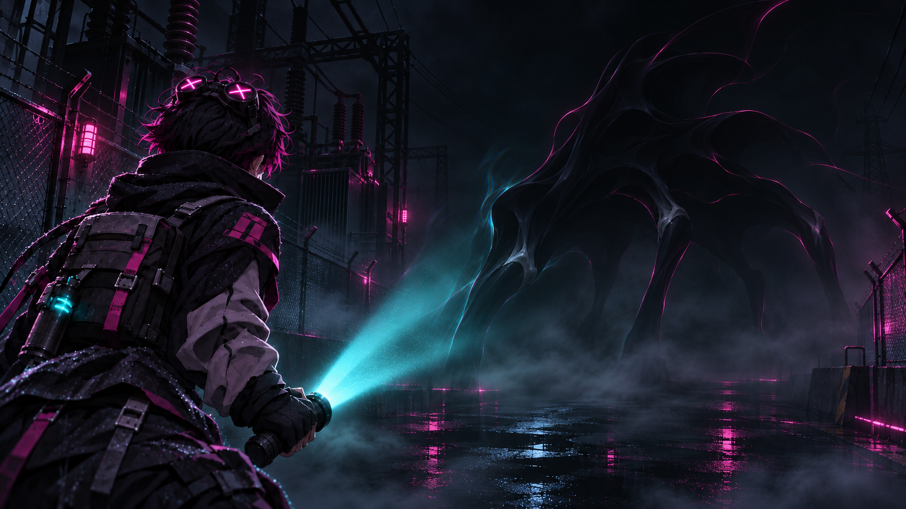
public/assets/cinematics/field-threats/mutant19/reveal.png
A · 1672×941 · 1997 KB
SHA-256 724bf9a791ca7405…
직접 참조 True · 동적 경로 후보 False · 유사 후보 0
Referenced asset; keep unless an intentional replacement is reviewed.
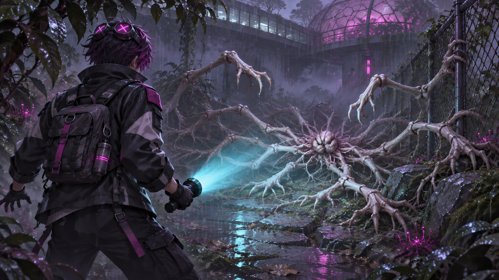
public/assets/cinematics/field-threats/mutant2/reveal.png
A · 1672×941 · 2591 KB
SHA-256 15ab3a5cbc072c2d…
직접 참조 True · 동적 경로 후보 False · 유사 후보 0
Referenced asset; keep unless an intentional replacement is reviewed.
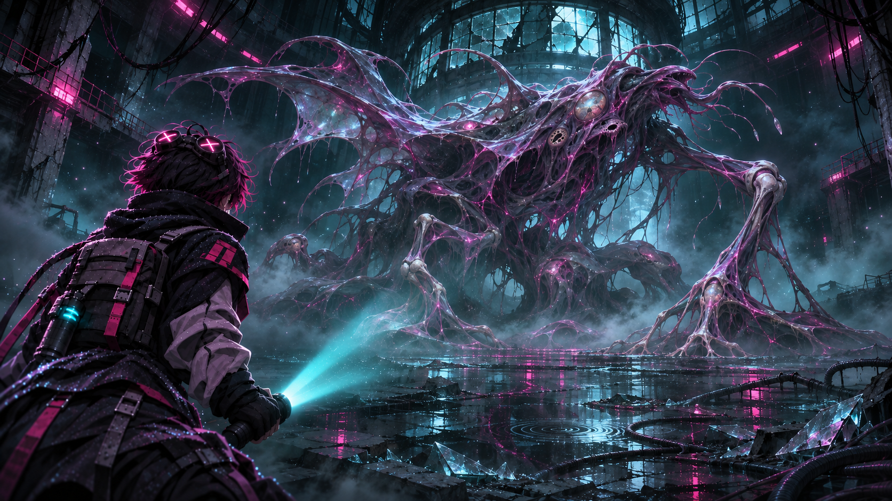
public/assets/cinematics/field-threats/mutant20/reveal.png
A · 1672×941 · 2724 KB
SHA-256 2a619b1136f819d1…
직접 참조 True · 동적 경로 후보 False · 유사 후보 0
Referenced asset; keep unless an intentional replacement is reviewed.
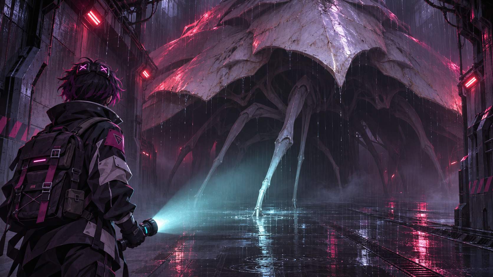
public/assets/cinematics/field-threats/mutant3/reveal.png
A · 1672×941 · 2415 KB
SHA-256 cf904859546826ff…
직접 참조 True · 동적 경로 후보 False · 유사 후보 0
Referenced asset; keep unless an intentional replacement is reviewed.
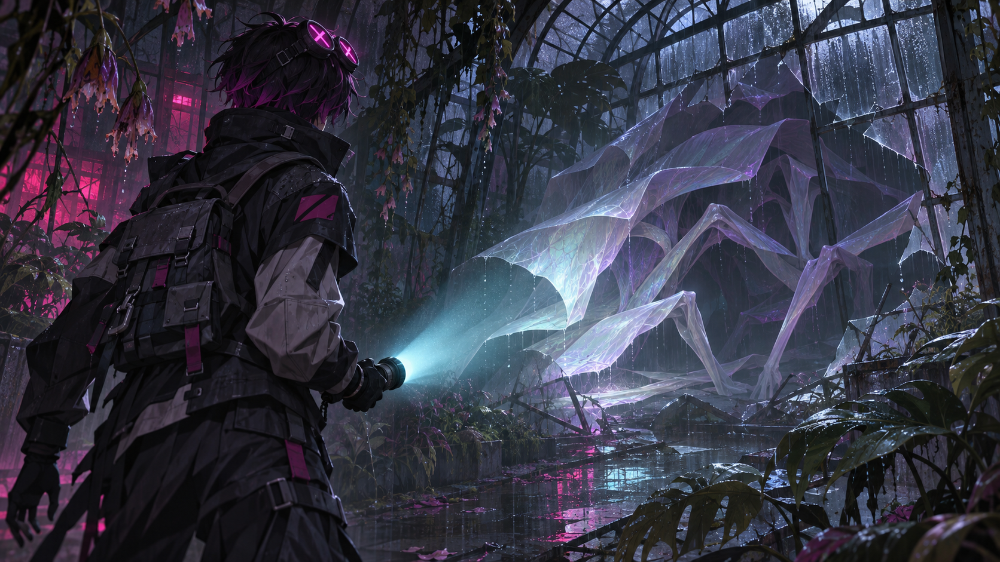
public/assets/cinematics/field-threats/mutant4/reveal.png
A · 1672×941 · 2598 KB
SHA-256 12450041a3f0003e…
직접 참조 True · 동적 경로 후보 False · 유사 후보 0
Referenced asset; keep unless an intentional replacement is reviewed.
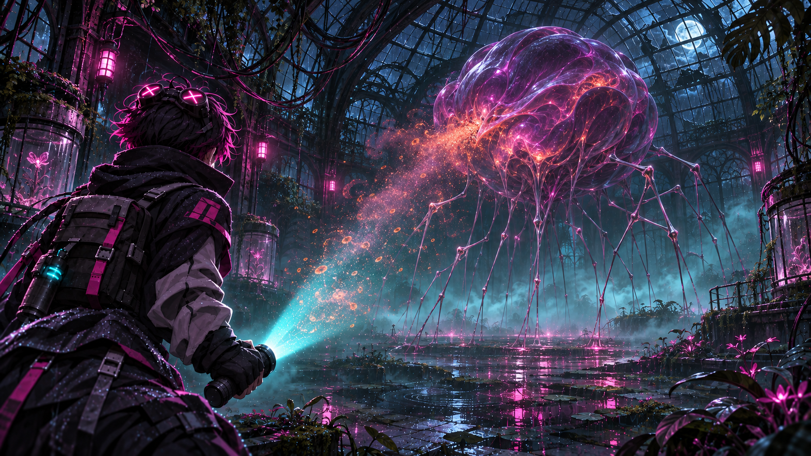
public/assets/cinematics/field-threats/mutant5/reveal.png
A · 1672×941 · 2958 KB
SHA-256 c74b2eb0ba3bb512…
직접 참조 True · 동적 경로 후보 False · 유사 후보 0
Referenced asset; keep unless an intentional replacement is reviewed.
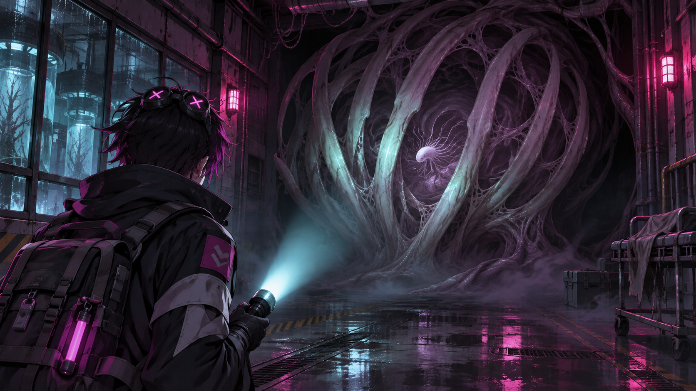
public/assets/cinematics/field-threats/mutant6/reveal.png
A · 1672×941 · 2331 KB
SHA-256 1978d6ff57fe7f88…
직접 참조 True · 동적 경로 후보 False · 유사 후보 0
Referenced asset; keep unless an intentional replacement is reviewed.
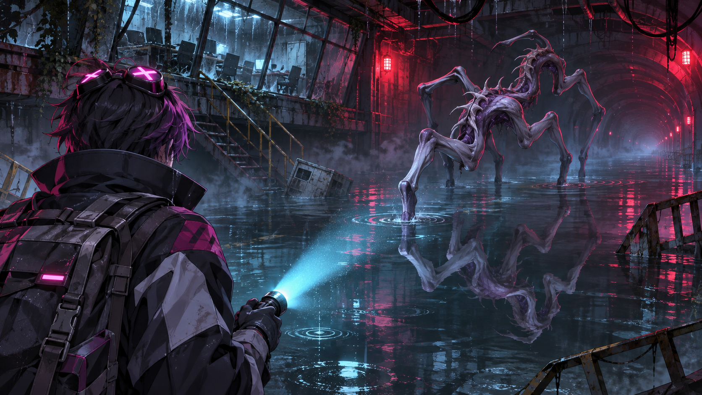
public/assets/cinematics/field-threats/mutant7/reveal.png
A · 1672×941 · 2515 KB
SHA-256 ad92e2528e82f5ff…
직접 참조 True · 동적 경로 후보 False · 유사 후보 0
Referenced asset; keep unless an intentional replacement is reviewed.
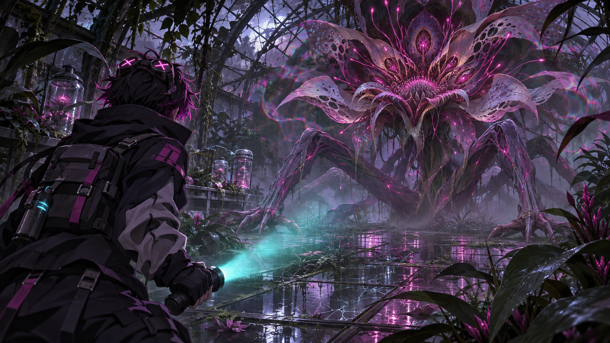
public/assets/cinematics/field-threats/mutant8/reveal.png
A · 1672×941 · 2801 KB
SHA-256 87999e4b286f99e9…
직접 참조 True · 동적 경로 후보 False · 유사 후보 0
Referenced asset; keep unless an intentional replacement is reviewed.
public/assets/cinematics/field-threats/mutant9/reveal.png
A · 1672×941 · 2495 KB
SHA-256 7478f216b0634991…
직접 참조 True · 동적 경로 후보 False · 유사 후보 0
Referenced asset; keep unless an intentional replacement is reviewed.
public/assets/cinematics/origin-zero/endings/END_01_eternal_experiment.png
A · 1672×941 · 2703 KB
SHA-256 1aa85617cc6791ef…
직접 참조 True · 동적 경로 후보 False · 유사 후보 0
Referenced asset; keep unless an intentional replacement is reviewed.
public/assets/cinematics/origin-zero/endings/END_02_eden.png
A · 1671×941 · 2298 KB
SHA-256 5c31322f53e96950…
직접 참조 True · 동적 경로 후보 False · 유사 후보 0
Referenced asset; keep unless an intentional replacement is reviewed.
public/assets/cinematics/origin-zero/endings/END_03_ark_seeds.png
A · 1671×941 · 2391 KB
SHA-256 a9e3cab9daf7c78f…
직접 참조 True · 동적 경로 후보 False · 유사 후보 0
Referenced asset; keep unless an intentional replacement is reviewed.
public/assets/cinematics/origin-zero/endings/END_04_last_zoo.png
A · 1672×941 · 2649 KB
SHA-256 63fc0e9206817ba0…
직접 참조 True · 동적 경로 후보 False · 유사 후보 0
Referenced asset; keep unless an intentional replacement is reviewed.
public/assets/cinematics/origin-zero/endings/END_05_subject_000.png
A · 1672×941 · 2385 KB
SHA-256 4854e1aede43cb22…
직접 참조 True · 동적 경로 후보 False · 유사 후보 0
Referenced asset; keep unless an intentional replacement is reviewed.
public/assets/cinematics/origin-zero/endings/END_06_silent_automation.png
A · 1672×941 · 2487 KB
SHA-256 3d9f03cdb3ce0f39…
직접 참조 True · 동적 경로 후보 False · 유사 후보 0
Referenced asset; keep unless an intentional replacement is reviewed.
public/assets/cinematics/origin-zero/endings/END_07_scattered_names.png
A · 1671×941 · 2368 KB
SHA-256 c0e3dd73cc034a99…
직접 참조 True · 동적 경로 후보 False · 유사 후보 0
Referenced asset; keep unless an intentional replacement is reviewed.
public/assets/cinematics/origin-zero/endings/END_08_last_signal.png
A · 1672×941 · 2751 KB
SHA-256 fc33d0bc2b7ad748…
직접 참조 True · 동적 경로 후보 False · 유사 후보 0
Referenced asset; keep unless an intentional replacement is reviewed.
public/assets/cinematics/origin-zero/epilogues/END_09_experiment_successor.png
A · 1671×941 · 2034 KB
SHA-256 699a7a675fd6eae6…
직접 참조 True · 동적 경로 후보 False · 유사 후보 0
Referenced asset; keep unless an intentional replacement is reviewed.
public/assets/cinematics/origin-zero/epilogues/END_10_eden_memory_cos.png
F · 1672×941 · 2655 KB
SHA-256 ca08bd8676c7f173…
직접 참조 False · 동적 경로 후보 True · 유사 후보 0
Possible dynamically assembled path; inspect runtime path construction.
public/assets/cinematics/origin-zero/epilogues/END_11_seeds_long_research.png
A · 1672×941 · 2385 KB
SHA-256 8a8dd6943e1b1fac…
직접 참조 True · 동적 경로 후보 False · 유사 후보 0
Referenced asset; keep unless an intentional replacement is reviewed.
public/assets/cinematics/origin-zero/epilogues/END_12_zoo_protected_animals.png
A · 1672×941 · 2921 KB
SHA-256 675da8745568470a…
직접 참조 True · 동적 경로 후보 False · 유사 후보 0
Referenced asset; keep unless an intentional replacement is reviewed.
public/assets/cinematics/origin-zero/epilogues/END_13_subject_self_choice.png
A · 1671×941 · 2427 KB
SHA-256 0cde060f400174e9…
직접 참조 True · 동적 경로 후보 False · 유사 후보 0
Referenced asset; keep unless an intentional replacement is reviewed.
public/assets/cinematics/origin-zero/epilogues/END_14_automation_eve_offline.png
A · 1672×941 · 2255 KB
SHA-256 69111cfb06796a44…
직접 참조 True · 동적 경로 후보 False · 유사 후보 0
Referenced asset; keep unless an intentional replacement is reviewed.
public/assets/cinematics/origin-zero/epilogues/END_15_names_memorial.png
A · 1672×941 · 2213 KB
SHA-256 7433457dd0e60e11…
직접 참조 True · 동적 경로 후보 False · 유사 후보 0
Referenced asset; keep unless an intentional replacement is reviewed.
public/assets/cinematics/origin-zero/epilogues/END_16_signal_uncertain.png
A · 1672×941 · 2529 KB
SHA-256 c28d75b1a1903917…
직접 참조 True · 동적 경로 후보 False · 유사 후보 0
Referenced asset; keep unless an intentional replacement is reviewed.
public/assets/cinematics/origin-zero/epilogues/END_17_headquarters_aftermath.png
A · 1672×941 · 2176 KB
SHA-256 720ef26f6c0915ee…
직접 참조 True · 동적 경로 후보 False · 유사 후보 0
Referenced asset; keep unless an intentional replacement is reviewed.
public/assets/cinematics/origin-zero/epilogues/END_18_sanctuary_aftermath.png
A · 1671×941 · 2579 KB
SHA-256 85c336b4048bb4fd…
직접 참조 True · 동적 경로 후보 False · 유사 후보 0
Referenced asset; keep unless an intentional replacement is reviewed.
public/assets/cinematics/origin-zero/epilogues/END_19_eve_last_memory.png
A · 1672×941 · 2365 KB
SHA-256 564db27bfb4786f7…
직접 참조 True · 동적 경로 후보 False · 유사 후보 0
Referenced asset; keep unless an intentional replacement is reviewed.
public/assets/cinematics/origin-zero/events/EVT_01_generator_overheat.webp
E · 1672×941 · 442 KB
SHA-256 b8c05bd93fd7c0be…
직접 참조 False · 동적 경로 후보 False · 유사 후보 0
No static code reference found; verify runtime, CSS, save compatibility, and archive role.
public/assets/cinematics/origin-zero/events/EVT_02_blackout.webp
E · 1672×941 · 151 KB
SHA-256 73fc0736aed12ff5…
직접 참조 False · 동적 경로 후보 False · 유사 후보 0
No static code reference found; verify runtime, CSS, save compatibility, and archive role.
public/assets/cinematics/origin-zero/events/EVT_03_breach.webp
E · 1672×941 · 266 KB
SHA-256 545e2462932eeb51…
직접 참조 False · 동적 경로 후보 False · 유사 후보 0
No static code reference found; verify runtime, CSS, save compatibility, and archive role.
public/assets/cinematics/origin-zero/events/EVT_04_cctv_loop.webp
E · 1672×941 · 236 KB
SHA-256 4a99092cbccf396d…
직접 참조 False · 동적 경로 후보 False · 유사 후보 0
No static code reference found; verify runtime, CSS, save compatibility, and archive role.
public/assets/cinematics/origin-zero/events/EVT_05_rations.webp
E · 1672×941 · 415 KB
SHA-256 42320f9b89db1b53…
직접 참조 False · 동적 경로 후보 False · 유사 후보 0
No static code reference found; verify runtime, CSS, save compatibility, and archive role.
public/assets/cinematics/origin-zero/events/EVT_06_coolant.webp
E · 1672×941 · 438 KB
SHA-256 f275813e8039ab99…
직접 참조 False · 동적 경로 후보 False · 유사 후보 0
No static code reference found; verify runtime, CSS, save compatibility, and archive role.
public/assets/cinematics/origin-zero/events/EVT_07_filter_clog.webp
E · 1672×941 · 318 KB
SHA-256 24ce77bebe9530a5…
직접 참조 False · 동적 경로 후보 False · 유사 후보 0
No static code reference found; verify runtime, CSS, save compatibility, and archive role.
public/assets/cinematics/origin-zero/events/EVT_08_escape_tracks.webp
E · 1672×941 · 359 KB
SHA-256 c387dcf614ea623c…
직접 참조 False · 동적 경로 후보 False · 유사 후보 0
No static code reference found; verify runtime, CSS, save compatibility, and archive role.
public/assets/cinematics/origin-zero/events/EVT_09_patrol_echo.webp
E · 1672×941 · 477 KB
SHA-256 2f3999288caf0f71…
직접 참조 False · 동적 경로 후보 False · 유사 후보 0
No static code reference found; verify runtime, CSS, save compatibility, and archive role.
public/assets/cinematics/origin-zero/events/EVT_10_feed_shortage.webp
E · 1672×941 · 451 KB
SHA-256 2afdf657428955b7…
직접 참조 False · 동적 경로 후보 False · 유사 후보 0
No static code reference found; verify runtime, CSS, save compatibility, and archive role.
public/assets/cinematics/origin-zero/events/EVT_11_echo.webp
E · 1672×941 · 255 KB
SHA-256 d7b70bf7c13091b6…
직접 참조 False · 동적 경로 후보 False · 유사 후보 0
No static code reference found; verify runtime, CSS, save compatibility, and archive role.
public/assets/cinematics/origin-zero/events/EVT_12_evidence_gap.webp
E · 1672×941 · 331 KB
SHA-256 52f46d80efc1f4f2…
직접 참조 False · 동적 경로 후보 False · 유사 후보 0
No static code reference found; verify runtime, CSS, save compatibility, and archive role.
public/assets/cinematics/origin-zero/events/EVT_13_quiet.webp
E · 1672×941 · 281 KB
SHA-256 f055f9e423de59cc…
직접 참조 False · 동적 경로 후보 False · 유사 후보 0
No static code reference found; verify runtime, CSS, save compatibility, and archive role.
public/assets/cinematics/origin-zero/events/EVT_14_pump_backflow.webp
E · 1672×941 · 449 KB
SHA-256 241ecdd935beb87c…
직접 참조 False · 동적 경로 후보 False · 유사 후보 0
No static code reference found; verify runtime, CSS, save compatibility, and archive role.
public/assets/cinematics/origin-zero/events/EVT_15_medic_memory.png
E · 1672×941 · 2396 KB
SHA-256 2ea4f58130a2b428…
직접 참조 False · 동적 경로 후보 False · 유사 후보 0
No static code reference found; verify runtime, CSS, save compatibility, and archive role.
public/assets/cinematics/origin-zero/events/EVT_16_staff_conflict.webp
E · 1672×941 · 233 KB
SHA-256 c359d2b2da96983c…
직접 참조 False · 동적 경로 후보 False · 유사 후보 0
No static code reference found; verify runtime, CSS, save compatibility, and archive role.
public/assets/cinematics/origin-zero/events/EVT_17_guard_refusal.webp
E · 1672×941 · 337 KB
SHA-256 ed61665d9b989b09…
직접 참조 False · 동적 경로 후보 False · 유사 후보 0
No static code reference found; verify runtime, CSS, save compatibility, and archive role.
public/assets/cinematics/origin-zero/events/EVT_18_animal_fever.webp
E · 1672×941 · 314 KB
SHA-256 62526ad4ca189b52…
직접 참조 False · 동적 경로 후보 False · 유사 후보 0
No static code reference found; verify runtime, CSS, save compatibility, and archive role.
public/assets/cinematics/origin-zero/events/EVT_19_empty_chair.webp
E · 1672×941 · 195 KB
SHA-256 b10ec8bd4e9fcb9d…
직접 참조 False · 동적 경로 후보 False · 유사 후보 0
No static code reference found; verify runtime, CSS, save compatibility, and archive role.
public/assets/cinematics/origin-zero/events/EVT_20_signal.webp
E · 1672×941 · 305 KB
SHA-256 63cadcafb153645b…
직접 참조 False · 동적 경로 후보 False · 유사 후보 0
No static code reference found; verify runtime, CSS, save compatibility, and archive role.
public/assets/cinematics/origin-zero/events/EVT_21_intrusion.webp
E · 1672×941 · 325 KB
SHA-256 ac6137fb4815d699…
직접 참조 False · 동적 경로 후보 False · 유사 후보 0
No static code reference found; verify runtime, CSS, save compatibility, and archive role.
public/assets/cinematics/origin-zero/events/EVT_22_hq_recall_order.webp
E · 1672×941 · 268 KB
SHA-256 6b0b2bf9dfb0c463…
직접 참조 False · 동적 경로 후보 False · 유사 후보 0
No static code reference found; verify runtime, CSS, save compatibility, and archive role.
public/assets/cinematics/origin-zero/events/EVT_23_hq_delete_order.webp
E · 1672×941 · 251 KB
SHA-256 120387a71e172845…
직접 참조 False · 동적 경로 후보 False · 유사 후보 0
No static code reference found; verify runtime, CSS, save compatibility, and archive role.
public/assets/cinematics/origin-zero/events/EVT_24_field_scavenger.webp
E · 1672×941 · 378 KB
SHA-256 8132556acbc93270…
직접 참조 False · 동적 경로 후보 False · 유사 후보 0
No static code reference found; verify runtime, CSS, save compatibility, and archive role.
public/assets/cinematics/origin-zero/events/EVT_25_contamination_pool.webp
E · 1672×941 · 330 KB
SHA-256 72285a1c450d16e1…
직접 참조 False · 동적 경로 후보 False · 유사 후보 0
No static code reference found; verify runtime, CSS, save compatibility, and archive role.
public/assets/cinematics/origin-zero/events/EVT_26_battery_swelling.webp
E · 1672×941 · 233 KB
SHA-256 caec229f466a88a2…
직접 참조 False · 동적 경로 후보 False · 유사 후보 0
No static code reference found; verify runtime, CSS, save compatibility, and archive role.
public/assets/cinematics/origin-zero/events/EVT_27_cable_arc.webp
E · 1672×941 · 408 KB
SHA-256 31441ce0c7f08b85…
직접 참조 False · 동적 경로 후보 False · 유사 후보 0
No static code reference found; verify runtime, CSS, save compatibility, and archive role.
public/assets/cinematics/origin-zero/events/EVT_28_resonance_drift.webp
E · 1672×941 · 306 KB
SHA-256 59459e34d1997285…
직접 참조 False · 동적 경로 후보 False · 유사 후보 0
No static code reference found; verify runtime, CSS, save compatibility, and archive role.
public/assets/cinematics/origin-zero/events/EVT_29_enclosure_rattle.webp
E · 1672×941 · 290 KB
SHA-256 54df663a0b00b3f7…
직접 참조 False · 동적 경로 후보 False · 유사 후보 0
No static code reference found; verify runtime, CSS, save compatibility, and archive role.
public/assets/cinematics/origin-zero/events/EVT_30_predator.webp
E · 1672×941 · 481 KB
SHA-256 d880fb907cb4791f…
직접 참조 False · 동적 경로 후보 False · 유사 후보 0
No static code reference found; verify runtime, CSS, save compatibility, and archive role.
public/assets/cinematics/origin-zero/events/EVT_31_keepsake.webp
E · 1672×941 · 188 KB
SHA-256 8adf2403cac61a63…
직접 참조 False · 동적 경로 후보 False · 유사 후보 0
No static code reference found; verify runtime, CSS, save compatibility, and archive role.
public/assets/cinematics/origin-zero/events/EVT_32_garden.webp
E · 1672×941 · 366 KB
SHA-256 70923a143fac134b…
직접 참조 False · 동적 경로 후보 False · 유사 후보 0
No static code reference found; verify runtime, CSS, save compatibility, and archive role.
public/assets/cinematics/origin-zero/events/EVT_33_m00_signature.webp
E · 1672×941 · 235 KB
SHA-256 f341512885f2d6c9…
직접 참조 False · 동적 경로 후보 False · 유사 후보 0
No static code reference found; verify runtime, CSS, save compatibility, and archive role.
public/assets/cinematics/origin-zero/events/EVT_34_cctv_blindspot.webp
E · 1672×941 · 244 KB
SHA-256 27ea17849454e6e0…
직접 참조 False · 동적 경로 후보 False · 유사 후보 0
No static code reference found; verify runtime, CSS, save compatibility, and archive role.
public/assets/cinematics/origin-zero/events/EVT_35_visitor.webp
E · 1672×941 · 333 KB
SHA-256 041e6e893bcaea72…
직접 참조 False · 동적 경로 후보 False · 유사 후보 0
No static code reference found; verify runtime, CSS, save compatibility, and archive role.
public/assets/cinematics/origin-zero/events/EVT_36_spores.webp
E · 1672×941 · 287 KB
SHA-256 fc9877c6b22c9244…
직접 참조 False · 동적 경로 후보 False · 유사 후보 0
No static code reference found; verify runtime, CSS, save compatibility, and archive role.
public/assets/cinematics/origin-zero/events/EVT_37_exposure_critical.webp
E · 1672×941 · 360 KB
SHA-256 ed738dfd162eb24c…
직접 참조 False · 동적 경로 후보 False · 유사 후보 0
No static code reference found; verify runtime, CSS, save compatibility, and archive role.
public/assets/cinematics/origin-zero/events/EVT_38_data_corruption.webp
E · 1672×941 · 326 KB
SHA-256 c0f37c5d6e5d3ad7…
직접 참조 False · 동적 경로 후보 False · 유사 후보 0
No static code reference found; verify runtime, CSS, save compatibility, and archive role.
public/assets/cinematics/origin-zero/events/EVT_39_fence_crack.webp
E · 1672×941 · 384 KB
SHA-256 fa7a53e23285cd6c…
직접 참조 False · 동적 경로 후보 False · 유사 후보 0
No static code reference found; verify runtime, CSS, save compatibility, and archive role.
public/assets/cinematics/origin-zero/events/EVT_40_construction_noise.webp
E · 1672×941 · 350 KB
SHA-256 dd8f49a5b5ef843b…
직접 참조 False · 동적 경로 후보 False · 유사 후보 0
No static code reference found; verify runtime, CSS, save compatibility, and archive role.
public/assets/cinematics/origin-zero/events/EVT_41_neural_static.webp
E · 1672×941 · 484 KB
SHA-256 d40ef0bee7d2807a…
직접 참조 False · 동적 경로 후보 False · 유사 후보 0
No static code reference found; verify runtime, CSS, save compatibility, and archive role.
public/assets/cinematics/origin-zero/events/EVT_42_fox_supply_memory.webp
E · 1672×941 · 329 KB
SHA-256 554f0adcf3820133…
직접 참조 False · 동적 경로 후보 False · 유사 후보 0
No static code reference found; verify runtime, CSS, save compatibility, and archive role.
public/assets/cinematics/origin-zero/events/EVT_43_deer_archive_memory.webp
E · 1672×941 · 336 KB
SHA-256 456dc67a1fea633b…
직접 참조 False · 동적 경로 후보 False · 유사 후보 0
No static code reference found; verify runtime, CSS, save compatibility, and archive role.
public/assets/cinematics/origin-zero/farewells/FAREWELL_01_rabbit.png
A · 1672×941 · 2318 KB
SHA-256 a9c9a5652e6a50c7…
직접 참조 True · 동적 경로 후보 False · 유사 후보 0
Referenced asset; keep unless an intentional replacement is reviewed.
public/assets/cinematics/origin-zero/farewells/FAREWELL_02_fox.png
A · 1672×941 · 2360 KB
SHA-256 9e6fc368d83b566e…
직접 참조 True · 동적 경로 후보 False · 유사 후보 0
Referenced asset; keep unless an intentional replacement is reviewed.
public/assets/cinematics/origin-zero/farewells/FAREWELL_03_deer.png
A · 1671×941 · 2331 KB
SHA-256 2484f04609876505…
직접 참조 True · 동적 경로 후보 False · 유사 후보 0
Referenced asset; keep unless an intentional replacement is reviewed.
public/assets/cinematics/origin-zero/farewells/FAREWELL_04_wolf.png
A · 1672×941 · 2068 KB
SHA-256 e093c3544963a3a3…
직접 참조 True · 동적 경로 후보 False · 유사 후보 0
Referenced asset; keep unless an intentional replacement is reviewed.
public/assets/cinematics/origin-zero/story/SCN_01_zoo_gate_prologue.webp
A · 1672×941 · 426 KB
SHA-256 e5eb9b818aba64fd…
직접 참조 True · 동적 경로 후보 False · 유사 후보 0
Referenced asset; keep unless an intentional replacement is reviewed.
public/assets/cinematics/origin-zero/story/SCN_02_eve_first_meeting.webp
A · 1672×941 · 414 KB
SHA-256 afd77e865088f2b7…
직접 참조 True · 동적 경로 후보 False · 유사 후보 0
Referenced asset; keep unless an intentional replacement is reviewed.
public/assets/cinematics/origin-zero/story/SCN_03_cctv_missing_frame.webp
A · 1672×941 · 300 KB
SHA-256 f70c242628a94ed5…
직접 참조 True · 동적 경로 후보 False · 유사 후보 0
Referenced asset; keep unless an intentional replacement is reviewed.
public/assets/cinematics/origin-zero/story/SCN_04_rabbit_medic_arrival.png
A · 1672×941 · 2245 KB
SHA-256 f7c32f4ab7d85248…
직접 참조 True · 동적 경로 후보 False · 유사 후보 0
Referenced asset; keep unless an intentional replacement is reviewed.
public/assets/cinematics/origin-zero/story/SCN_05_fox_supply_arrival.webp
A · 1672×941 · 381 KB
SHA-256 20c74e3213e7c0a1…
직접 참조 True · 동적 경로 후보 False · 유사 후보 0
Referenced asset; keep unless an intentional replacement is reviewed.
public/assets/cinematics/origin-zero/story/SCN_07_wolf_guard_arrival.webp
A · 1672×941 · 415 KB
SHA-256 6cfec1d5fe42ee29…
직접 참조 True · 동적 경로 후보 False · 유사 후보 0
Referenced asset; keep unless an intentional replacement is reviewed.
public/assets/cinematics/origin-zero/story/SCN_08_first_roaming_threat.webp
A · 1672×941 · 353 KB
SHA-256 8f2bb5772b617f09…
직접 참조 True · 동적 경로 후보 False · 유사 후보 0
Referenced asset; keep unless an intentional replacement is reviewed.
public/assets/cinematics/origin-zero/story/SCN_09_wolf_last_stand.webp
A · 1672×941 · 414 KB
SHA-256 09ad31f65da9b853…
직접 참조 True · 동적 경로 후보 False · 유사 후보 0
Referenced asset; keep unless an intentional replacement is reviewed.
public/assets/cinematics/origin-zero/story/SCN_10_m00_encounter.webp
A · 1671×941 · 269 KB
SHA-256 5ff7a27cd98c6e85…
직접 참조 True · 동적 경로 후보 False · 유사 후보 0
Referenced asset; keep unless an intentional replacement is reviewed.
public/assets/cinematics/origin-zero/story/SCN_11_m00_origin_signature.webp
A · 1672×941 · 304 KB
SHA-256 9a18d25d5cdaf27e…
직접 참조 True · 동적 경로 후보 False · 유사 후보 0
Referenced asset; keep unless an intentional replacement is reviewed.
public/assets/cinematics/origin-zero/story/SCN_12_m00_transfer.webp
A · 1672×941 · 391 KB
SHA-256 7b07ce4796ff48f7…
직접 참조 True · 동적 경로 후보 False · 유사 후보 0
Referenced asset; keep unless an intentional replacement is reviewed.
public/assets/cinematics/origin-zero/story/SCN_13_m00_protection.webp
A · 1672×941 · 341 KB
SHA-256 b53d2e8f7772c253…
직접 참조 True · 동적 경로 후보 False · 유사 후보 0
Referenced asset; keep unless an intentional replacement is reviewed.
public/assets/cinematics/origin-zero/story/SCN_14_human_origin_revelation.webp
A · 1672×941 · 376 KB
SHA-256 ffdbd18493145655…
직접 참조 True · 동적 경로 후보 False · 유사 후보 0
Referenced asset; keep unless an intentional replacement is reviewed.
public/assets/cinematics/origin-zero/story/SCN_15_scientist_daughter_cat.webp
A · 1672×941 · 400 KB
SHA-256 df56a55d87dab544…
직접 참조 True · 동적 경로 후보 False · 유사 후보 0
Referenced asset; keep unless an intentional replacement is reviewed.
public/assets/cinematics/origin-zero/story/SCN_16_protagonist_scientist_memory.webp
A · 1672×941 · 422 KB
SHA-256 c7c73f0aeab2db86…
직접 참조 True · 동적 경로 후보 False · 유사 후보 0
Referenced asset; keep unless an intentional replacement is reviewed.
public/assets/cinematics/origin-zero/story/SCN_17_eve_independent_choice.webp
A · 1672×941 · 360 KB
SHA-256 26220cabb2b08bb9…
직접 참조 True · 동적 경로 후보 False · 유사 후보 0
Referenced asset; keep unless an intentional replacement is reviewed.
public/assets/cinematics/origin-zero/story/SCN_18_operation_ark_recall.webp
A · 1671×941 · 415 KB
SHA-256 6b18b822608eeaeb…
직접 참조 True · 동적 경로 후보 False · 유사 후보 0
Referenced asset; keep unless an intentional replacement is reviewed.
public/assets/cinematics/origin-zero/story/SCN_19_final_farewell.webp
A · 1672×941 · 527 KB
SHA-256 5df52802d513546e…
직접 참조 True · 동적 경로 후보 False · 유사 후보 0
Referenced asset; keep unless an intentional replacement is reviewed.

public/assets/cinematics/staff-terminations/deer/scene.webp
A · 1672×941 · 330 KB
SHA-256 e406716b21c9e9bb…
직접 참조 True · 동적 경로 후보 False · 유사 후보 0
Referenced asset; keep unless an intentional replacement is reviewed.
public/assets/cinematics/staff-terminations/fox/scene.webp
A · 1672×941 · 326 KB
SHA-256 dba9b59ffa3decb4…
직접 참조 True · 동적 경로 후보 False · 유사 후보 0
Referenced asset; keep unless an intentional replacement is reviewed.

public/assets/cinematics/staff-terminations/rabbit/scene.webp
A · 1672×941 · 348 KB
SHA-256 b94632806f03515b…
직접 참조 True · 동적 경로 후보 False · 유사 후보 0
Referenced asset; keep unless an intentional replacement is reviewed.
public/assets/cinematics/staff-terminations/wolf/scene.png
A · 1672×941 · 2400 KB
SHA-256 b47f501e694a545e…
직접 참조 True · 동적 경로 후보 False · 유사 후보 0
Referenced asset; keep unless an intentional replacement is reviewed.
public/assets/endings/ending_eden_cinematic.png
E · 1672×941 · 3285 KB
SHA-256 06daef9419737cb4…
직접 참조 False · 동적 경로 후보 False · 유사 후보 0
No static code reference found; verify runtime, CSS, save compatibility, and archive role.
public/assets/endings/ending_eden_finale.png
A · 1672×941 · 3410 KB
SHA-256 f25c43e6daf02ffc…
직접 참조 True · 동적 경로 후보 False · 유사 후보 0
Referenced asset; keep unless an intentional replacement is reviewed.

public/assets/endings/ending_empty_shiftroom_cinematic.png
A · 1774×887 · 2228 KB
SHA-256 d333e6429160c9e6…
직접 참조 True · 동적 경로 후보 False · 유사 후보 0
Referenced asset; keep unless an intentional replacement is reviewed.
public/assets/endings/ending_eternal_experiment_cinematic.png
E · 1816×866 · 2795 KB
SHA-256 63ba05533b46221b…
직접 참조 False · 동적 경로 후보 False · 유사 후보 0
No static code reference found; verify runtime, CSS, save compatibility, and archive role.
public/assets/endings/ending_eternal_experiment_finale.png
A · 1672×941 · 2889 KB
SHA-256 0f04114aa678085b…
직접 참조 True · 동적 경로 후보 False · 유사 후보 0
Referenced asset; keep unless an intentional replacement is reviewed.

public/assets/endings/ending_final_transmission_cinematic.png
A · 1931×814 · 2311 KB
SHA-256 80f64148ed2eeee6…
직접 참조 True · 동적 경로 후보 False · 유사 후보 0
Referenced asset; keep unless an intentional replacement is reviewed.
public/assets/endings/ending_first_sentence_cinematic.png
A · 1774×887 · 2962 KB
SHA-256 1bbc9db8b1620551…
직접 참조 True · 동적 경로 후보 False · 유사 후보 0
Referenced asset; keep unless an intentional replacement is reviewed.
public/assets/endings/ending_humane_restoration_cinematic.png
A · 1920×819 · 2501 KB
SHA-256 a8d4f8e237a6a54a…
직접 참조 True · 동적 경로 후보 False · 유사 후보 0
Referenced asset; keep unless an intentional replacement is reviewed.

public/assets/endings/ending_incomplete_revival.webp
F · 1280×720 · 342 KB
SHA-256 0e40a395b164d09e…
직접 참조 False · 동적 경로 후보 True · 유사 후보 0
Possible dynamically assembled path; inspect runtime path construction.
public/assets/endings/ending_incomplete_revival_cinematic.png
A · 1832×859 · 2223 KB
SHA-256 2e45d21d6cf380fa…
직접 참조 True · 동적 경로 후보 False · 유사 후보 0
Referenced asset; keep unless an intentional replacement is reviewed.
public/assets/endings/ending_last_signal.webp
F · 1280×720 · 462 KB
SHA-256 36c5a9fb56a11b37…
직접 참조 False · 동적 경로 후보 True · 유사 후보 0
Possible dynamically assembled path; inspect runtime path construction.

public/assets/endings/ending_last_signal_cinematic.png
E · 1672×941 · 2343 KB
SHA-256 f52e2c177323b729…
직접 참조 False · 동적 경로 후보 False · 유사 후보 0
No static code reference found; verify runtime, CSS, save compatibility, and archive role.
public/assets/endings/ending_last_signal_finale.png
A · 1672×941 · 2798 KB
SHA-256 cdb790bfd1f69b08…
직접 참조 True · 동적 경로 후보 False · 유사 후보 0
Referenced asset; keep unless an intentional replacement is reviewed.

public/assets/endings/ending_last_zoo_cinematic.png
E · 1671×941 · 3329 KB
SHA-256 fd4e64c6e1a180bc…
직접 참조 False · 동적 경로 후보 False · 유사 후보 0
No static code reference found; verify runtime, CSS, save compatibility, and archive role.
public/assets/endings/ending_last_zoo_finale.png
A · 1672×941 · 3248 KB
SHA-256 c2238a57a4315f92…
직접 참조 True · 동적 경로 후보 False · 유사 후보 0
Referenced asset; keep unless an intentional replacement is reviewed.
public/assets/endings/ending_late_gate_cinematic.png
A · 1672×941 · 2747 KB
SHA-256 933fb9c497bee7b0…
직접 참조 True · 동적 경로 후보 False · 유사 후보 0
Referenced asset; keep unless an intentional replacement is reviewed.

public/assets/endings/ending_new_consciousness.webp
E · 1280×720 · 450 KB
SHA-256 6a621623df4ee268…
직접 참조 False · 동적 경로 후보 False · 유사 후보 0
No static code reference found; verify runtime, CSS, save compatibility, and archive role.

public/assets/endings/ending_open_spring.webp
E · 1280×720 · 436 KB
SHA-256 d92c1b1e0fb3c7a1…
직접 참조 False · 동적 경로 후보 False · 유사 후보 0
No static code reference found; verify runtime, CSS, save compatibility, and archive role.
public/assets/endings/ending_quiet_automation_cinematic.png
A · 1931×814 · 2402 KB
SHA-256 aab8c2d5ea079422…
직접 참조 True · 동적 경로 후보 False · 유사 후보 0
Referenced asset; keep unless an intentional replacement is reviewed.

public/assets/endings/ending_scattered_names.webp
F · 1280×720 · 384 KB
SHA-256 f62a1df87e841655…
직접 참조 False · 동적 경로 후보 True · 유사 후보 0
Possible dynamically assembled path; inspect runtime path construction.
public/assets/endings/ending_scattered_names_cinematic.png
E · 1672×941 · 2504 KB
SHA-256 e0f62299e7c4c5e9…
직접 참조 False · 동적 경로 후보 False · 유사 후보 0
No static code reference found; verify runtime, CSS, save compatibility, and archive role.
public/assets/endings/ending_scattered_names_finale.png
A · 1672×941 · 2621 KB
SHA-256 111588e0b5a4d159…
직접 참조 True · 동적 경로 후보 False · 유사 후보 0
Referenced asset; keep unless an intentional replacement is reviewed.

public/assets/endings/ending_seed_ark.png
F · 1672×941 · 2608 KB
SHA-256 ebea9b309117c59d…
직접 참조 False · 동적 경로 후보 True · 유사 후보 0
Possible dynamically assembled path; inspect runtime path construction.
public/assets/endings/ending_seed_ark_cinematic.png
E · 1672×941 · 2849 KB
SHA-256 27a496f7167e8836…
직접 참조 False · 동적 경로 후보 False · 유사 후보 0
No static code reference found; verify runtime, CSS, save compatibility, and archive role.
public/assets/endings/ending_seed_ark_finale.png
A · 1672×941 · 2918 KB
SHA-256 edbdeba0d8ed3f18…
직접 참조 True · 동적 경로 후보 False · 유사 후보 0
Referenced asset; keep unless an intentional replacement is reviewed.

public/assets/endings/ending_silent_automation.webp
F · 1280×720 · 416 KB
SHA-256 f2140ab77552122f…
직접 참조 False · 동적 경로 후보 True · 유사 후보 0
Possible dynamically assembled path; inspect runtime path construction.
public/assets/endings/ending_silent_automation_cinematic.png
E · 1672×941 · 2615 KB
SHA-256 8d1da1e6c14570ff…
직접 참조 False · 동적 경로 후보 False · 유사 후보 0
No static code reference found; verify runtime, CSS, save compatibility, and archive role.
public/assets/endings/ending_silent_automation_finale.png
A · 1672×941 · 2966 KB
SHA-256 35eed11cc40ab468…
직접 참조 True · 동적 경로 후보 False · 유사 후보 0
Referenced asset; keep unless an intentional replacement is reviewed.
public/assets/endings/ending_spring_beyond_cage_cinematic.png
A · 1671×941 · 2935 KB
SHA-256 3e545583de89787b…
직접 참조 True · 동적 경로 후보 False · 유사 후보 0
Referenced asset; keep unless an intentional replacement is reviewed.

public/assets/endings/ending_spring_outside_records_cinematic.png
A · 1774×887 · 3481 KB
SHA-256 91925ca169d7070b…
직접 참조 True · 동적 경로 후보 False · 유사 후보 0
Referenced asset; keep unless an intentional replacement is reviewed.

public/assets/endings/ending_subject_000.webp
F · 1280×720 · 371 KB
SHA-256 9c89ecb8af3cda8f…
직접 참조 False · 동적 경로 후보 True · 유사 후보 0
Possible dynamically assembled path; inspect runtime path construction.
public/assets/endings/ending_subject_000_choice.png
A · 1672×941 · 2819 KB
SHA-256 fd461de743552877…
직접 참조 True · 동적 경로 후보 False · 유사 후보 0
Referenced asset; keep unless an intentional replacement is reviewed.
public/assets/endings/ending_subject_000_cinematic.png
E · 1672×941 · 2534 KB
SHA-256 6de0b66b8662a404…
직접 참조 False · 동적 경로 후보 False · 유사 후보 0
No static code reference found; verify runtime, CSS, save compatibility, and archive role.

public/assets/endings/ending_successor_cinematic.png
A · 1920×819 · 2607 KB
SHA-256 bc49793c9dad265a…
직접 참조 True · 동적 경로 후보 False · 유사 후보 0
Referenced asset; keep unless an intentional replacement is reviewed.

public/assets/endings/ending_two_caretakers.webp
F · 1280×720 · 466 KB
SHA-256 c58bd18e198b2faa…
직접 참조 False · 동적 경로 후보 True · 유사 후보 0
Possible dynamically assembled path; inspect runtime path construction.

public/assets/endings/ending_two_caretakers_cinematic.png
A · 1870×841 · 2903 KB
SHA-256 2ab21462b13fcbad…
직접 참조 True · 동적 경로 후보 False · 유사 후보 0
Referenced asset; keep unless an intentional replacement is reviewed.
public/assets/events/event_blackout.webp
A · 1536×1024 · 499 KB
SHA-256 9cbc4e89e7e532b1…
직접 참조 True · 동적 경로 후보 False · 유사 후보 0
Referenced asset; keep unless an intentional replacement is reviewed.
public/assets/events/event_containment.webp
A · 1536×1024 · 606 KB
SHA-256 e29427f7d6df1291…
직접 참조 True · 동적 경로 후보 False · 유사 후보 0
Referenced asset; keep unless an intentional replacement is reviewed.
public/assets/events/event_coolant.webp
A · 1536×1024 · 634 KB
SHA-256 8ad38d4ba98ac25e…
직접 참조 True · 동적 경로 후보 False · 유사 후보 0
Referenced asset; keep unless an intentional replacement is reviewed.
public/assets/events/event_garden.webp
A · 1536×1024 · 608 KB
SHA-256 8749ba2de3db3592…
직접 참조 True · 동적 경로 후보 False · 유사 후보 0
Referenced asset; keep unless an intentional replacement is reviewed.
public/assets/events/event_signal.webp
A · 1536×1024 · 567 KB
SHA-256 d85b384d831d9ff6…
직접 참조 True · 동적 경로 후보 False · 유사 후보 0
Referenced asset; keep unless an intentional replacement is reviewed.
public/assets/events/event_spores.webp
A · 1536×1024 · 699 KB
SHA-256 a3c7c8aafe11bd43…
직접 참조 True · 동적 경로 후보 False · 유사 후보 0
Referenced asset; keep unless an intentional replacement is reviewed.
public/assets/events/m00_suspected_origin.webp
A · 1672×941 · 269 KB
SHA-256 bda8470829a09b6f…
직접 참조 True · 동적 경로 후보 False · 유사 후보 0
Referenced asset; keep unless an intentional replacement is reviewed.

public/assets/field/grass.png
A · 1536×1024 · 1297 KB
SHA-256 f0f998307cf17186…
직접 참조 True · 동적 경로 후보 False · 유사 후보 0
Referenced asset; keep unless an intentional replacement is reviewed.

public/assets/field/ground.png
A · 1254×1254 · 1460 KB
SHA-256 380c24f992b4835c…
직접 참조 True · 동적 경로 후보 False · 유사 후보 0
Referenced asset; keep unless an intentional replacement is reviewed.

public/assets/field/ranger.png
F · 1086×1448 · 628 KB
SHA-256 2201727f856ff2da…
직접 참조 False · 동적 경로 후보 True · 유사 후보 0
Possible dynamically assembled path; inspect runtime path construction.

public/assets/field/ranger_walk.png
A · 1254×1254 · 1322 KB
SHA-256 8ceaaef7d4864cc9…
직접 참조 True · 동적 경로 후보 False · 유사 후보 0
Referenced asset; keep unless an intentional replacement is reviewed.
public/assets/field/world_ground.png
A · 1536×1024 · 2883 KB
SHA-256 95353fd736f97248…
직접 참조 True · 동적 경로 후보 False · 유사 후보 0
Referenced asset; keep unless an intentional replacement is reviewed.
public/assets/gameplay/capture/staging.png
A · 1671×941 · 2905 KB
SHA-256 61e3baa356deeda3…
직접 참조 True · 동적 경로 후보 False · 유사 후보 0
Referenced asset; keep unless an intentional replacement is reviewed.
public/assets/gameplay/cctv/cam-01.png
F · 1672×941 · 2892 KB
SHA-256 eb6c5062c1eab715…
직접 참조 False · 동적 경로 후보 True · 유사 후보 0
Possible dynamically assembled path; inspect runtime path construction.
public/assets/gameplay/cctv/cam-04.png
F · 1671×941 · 2680 KB
SHA-256 467fb71bbe0d80d2…
직접 참조 False · 동적 경로 후보 True · 유사 후보 0
Possible dynamically assembled path; inspect runtime path construction.
public/assets/gameplay/cctv/containment.png
A · 1672×941 · 2948 KB
SHA-256 be2feb90fad23f17…
직접 참조 True · 동적 경로 후보 False · 유사 후보 0
Referenced asset; keep unless an intentional replacement is reviewed.
public/assets/gameplay/cinematics/CAPTURE_01_success.png
A · 1599×900 · 695 KB
SHA-256 9e27c8bad8874e01…
직접 참조 True · 동적 경로 후보 False · 유사 후보 0
Referenced asset; keep unless an intentional replacement is reviewed.
public/assets/gameplay/cinematics/CAPTURE_02_failure.png
A · 1599×900 · 744 KB
SHA-256 a0c3d71e745ce679…
직접 참조 True · 동적 경로 후보 False · 유사 후보 0
Referenced asset; keep unless an intentional replacement is reviewed.
public/assets/gameplay/cinematics/COMBAT_01_encounter.webp
A · 1672×941 · 360 KB
SHA-256 8e66f85a5bef9e3c…
직접 참조 True · 동적 경로 후보 False · 유사 후보 0
Referenced asset; keep unless an intentional replacement is reviewed.
public/assets/gameplay/cinematics/COMBAT_02_victory.webp
A · 1672×941 · 501 KB
SHA-256 c89958de8857e7f2…
직접 참조 True · 동적 경로 후보 False · 유사 후보 0
Referenced asset; keep unless an intentional replacement is reviewed.
public/assets/gameplay/cinematics/COMBAT_03_defeat.png
A · 1672×941 · 2528 KB
SHA-256 5f44406957a3ee2e…
직접 참조 True · 동적 경로 후보 False · 유사 후보 0
Referenced asset; keep unless an intentional replacement is reviewed.
public/assets/gameplay/cinematics/COMBAT_04_retreat.png
A · 1672×941 · 2650 KB
SHA-256 ea0dc7ca136345a9…
직접 참조 True · 동적 경로 후보 False · 유사 후보 0
Referenced asset; keep unless an intentional replacement is reviewed.
public/assets/gameplay/cinematics/GAMEOVER_01_operator.png
E · 1672×941 · 2541 KB
SHA-256 57860206fc8fc6a0…
직접 참조 False · 동적 경로 후보 False · 유사 후보 0
No static code reference found; verify runtime, CSS, save compatibility, and archive role.
public/assets/gameplay/cinematics/GAMEOVER_02_eve.png
E · 1672×941 · 2437 KB
SHA-256 d0cc92deb276f40f…
직접 참조 False · 동적 경로 후보 False · 유사 후보 0
No static code reference found; verify runtime, CSS, save compatibility, and archive role.
public/assets/gameplay/cinematics/RECOVERY_01_success.png
A · 1672×941 · 2652 KB
SHA-256 98b715b5507d2a0a…
직접 참조 True · 동적 경로 후보 False · 유사 후보 0
Referenced asset; keep unless an intentional replacement is reviewed.
public/assets/gameplay/containment/chamber.png
A · 1672×941 · 2455 KB
SHA-256 5800482100615cda…
직접 참조 True · 동적 경로 후보 False · 유사 후보 0
Referenced asset; keep unless an intentional replacement is reviewed.
public/assets/gameplay/effects/spore.png
A · 1671×941 · 754 KB
SHA-256 32b96e9b90f57475…
직접 참조 True · 동적 경로 후보 False · 유사 후보 0
Referenced asset; keep unless an intentional replacement is reviewed.
public/assets/gameplay/recovery/staging.png
A · 1672×941 · 2899 KB
SHA-256 ece97a328d6aa36b…
직접 참조 True · 동적 경로 후보 False · 유사 후보 0
Referenced asset; keep unless an intentional replacement is reviewed.
public/assets/gameplay/regions/archive.png
F · 1672×941 · 2634 KB
SHA-256 2dd6dde7cb77ce69…
직접 참조 False · 동적 경로 후보 True · 유사 후보 0
Possible dynamically assembled path; inspect runtime path construction.
public/assets/gameplay/regions/conservatory.png
F · 1672×941 · 3065 KB
SHA-256 d09d4ba5244d1de7…
직접 참조 False · 동적 경로 후보 True · 유사 후보 0
Possible dynamically assembled path; inspect runtime path construction.
public/assets/gameplay/regions/garden.png
F · 1672×941 · 2640 KB
SHA-256 55c1bd699d305cc1…
직접 참조 False · 동적 경로 후보 True · 유사 후보 0
Possible dynamically assembled path; inspect runtime path construction.
public/assets/gameplay/regions/rail.png
F · 1671×941 · 2810 KB
SHA-256 70bce21989767d9f…
직접 참조 False · 동적 경로 후보 True · 유사 후보 0
Possible dynamically assembled path; inspect runtime path construction.
public/assets/gameplay/regions/tunnels.png
F · 1671×941 · 2703 KB
SHA-256 28cda5c58ba760fc…
직접 참조 False · 동적 경로 후보 True · 유사 후보 0
Possible dynamically assembled path; inspect runtime path construction.
public/assets/gameplay/regions/vault.png
F · 1671×941 · 2708 KB
SHA-256 24e8ebcd4fb23950…
직접 참조 False · 동적 경로 후보 True · 유사 후보 0
Possible dynamically assembled path; inspect runtime path construction.
public/assets/gameplay/results/failure.png
A · 1672×941 · 2232 KB
SHA-256 e6eaf219e900ae37…
직접 참조 True · 동적 경로 후보 False · 유사 후보 0
Referenced asset; keep unless an intentional replacement is reviewed.
public/assets/gameplay/results/success.png
A · 1672×941 · 2192 KB
SHA-256 cb6faf118e2418ee…
직접 참조 True · 동적 경로 후보 False · 유사 후보 0
Referenced asset; keep unless an intentional replacement is reviewed.
public/assets/gameplay/start/generator.png
F · 1672×941 · 2683 KB
SHA-256 697049c2df5a6b64…
직접 참조 False · 동적 경로 후보 True · 유사 후보 0
Possible dynamically assembled path; inspect runtime path construction.
public/assets/gameplay/start/observatory.png
F · 1670×942 · 2931 KB
SHA-256 d1520cc2b5318836…
직접 참조 False · 동적 경로 후보 True · 유사 후보 0
Possible dynamically assembled path; inspect runtime path construction.
public/assets/gameplay/start/station.png
F · 1672×941 · 2569 KB
SHA-256 0c1af7800b1213d5…
직접 참조 False · 동적 경로 후보 True · 유사 후보 0
Possible dynamically assembled path; inspect runtime path construction.
public/assets/hidden-photos/photo_01.webp
E · 1448×1086 · 329 KB
SHA-256 deae729a6f22dcb2…
직접 참조 False · 동적 경로 후보 False · 유사 후보 0
No static code reference found; verify runtime, CSS, save compatibility, and archive role.
public/assets/hidden-photos/photo_02.webp
E · 1448×1086 · 305 KB
SHA-256 950adcddd007a3d7…
직접 참조 False · 동적 경로 후보 False · 유사 후보 0
No static code reference found; verify runtime, CSS, save compatibility, and archive role.
public/assets/hidden-photos/photo_03.webp
E · 1448×1086 · 290 KB
SHA-256 448bd26a8dc3bc17…
직접 참조 False · 동적 경로 후보 False · 유사 후보 0
No static code reference found; verify runtime, CSS, save compatibility, and archive role.
public/assets/hidden-photos/photo_04.webp
E · 1448×1086 · 352 KB
SHA-256 fd122903e878bc68…
직접 참조 False · 동적 경로 후보 False · 유사 후보 0
No static code reference found; verify runtime, CSS, save compatibility, and archive role.
public/assets/hidden-photos/photo_05.webp
E · 1448×1086 · 417 KB
SHA-256 ace7702016231cb0…
직접 참조 False · 동적 경로 후보 False · 유사 후보 0
No static code reference found; verify runtime, CSS, save compatibility, and archive role.
public/assets/hidden-photos/photo_06.webp
E · 1448×1086 · 524 KB
SHA-256 bd6a9fa8ac845dc4…
직접 참조 False · 동적 경로 후보 False · 유사 후보 0
No static code reference found; verify runtime, CSS, save compatibility, and archive role.
public/assets/hidden-photos/photo_07.webp
A · 1448×1086 · 498 KB
SHA-256 ab07f72f6c59499d…
직접 참조 True · 동적 경로 후보 False · 유사 후보 0
Referenced asset; keep unless an intentional replacement is reviewed.
public/assets/hidden-photos/photo_08.webp
A · 1448×1086 · 457 KB
SHA-256 312870e74bbf5686…
직접 참조 True · 동적 경로 후보 False · 유사 후보 0
Referenced asset; keep unless an intentional replacement is reviewed.
public/assets/hidden-photos/photo_09.webp
E · 1448×1086 · 373 KB
SHA-256 51b018a98c03cad0…
직접 참조 False · 동적 경로 후보 False · 유사 후보 0
No static code reference found; verify runtime, CSS, save compatibility, and archive role.
public/assets/hidden-photos/photo_10.webp
E · 1448×1086 · 441 KB
SHA-256 6002e536efcb06dd…
직접 참조 False · 동적 경로 후보 False · 유사 후보 0
No static code reference found; verify runtime, CSS, save compatibility, and archive role.
public/assets/hidden-photos/photo_11.webp
A · 1448×1086 · 338 KB
SHA-256 ace9ae581bf6a4ca…
직접 참조 True · 동적 경로 후보 False · 유사 후보 0
Referenced asset; keep unless an intentional replacement is reviewed.
public/assets/hidden-photos/photo_12.webp
E · 1448×1086 · 297 KB
SHA-256 c496535e0a9d2ea7…
직접 참조 False · 동적 경로 후보 False · 유사 후보 0
No static code reference found; verify runtime, CSS, save compatibility, and archive role.
public/assets/monsters/mutant10_mutant.png
E · 1254×1254 · 1743 KB
SHA-256 d331f86d9503255a…
직접 참조 False · 동적 경로 후보 False · 유사 후보 0
No static code reference found; verify runtime, CSS, save compatibility, and archive role.
public/assets/monsters/mutant11_mutant.png
E · 1254×1254 · 1480 KB
SHA-256 51e1c68802793bf4…
직접 참조 False · 동적 경로 후보 False · 유사 후보 0
No static code reference found; verify runtime, CSS, save compatibility, and archive role.
public/assets/monsters/mutant12_mutant.png
E · 1254×1254 · 1834 KB
SHA-256 1aa8861eeecbd7da…
직접 참조 False · 동적 경로 후보 False · 유사 후보 0
No static code reference found; verify runtime, CSS, save compatibility, and archive role.
public/assets/monsters/mutant13_mutant.png
E · 1254×1254 · 2077 KB
SHA-256 6ffbb4c75e92bbec…
직접 참조 False · 동적 경로 후보 False · 유사 후보 0
No static code reference found; verify runtime, CSS, save compatibility, and archive role.
public/assets/monsters/mutant14_mutant.png
E · 1254×1254 · 1978 KB
SHA-256 a2f55e9cacea38fa…
직접 참조 False · 동적 경로 후보 False · 유사 후보 0
No static code reference found; verify runtime, CSS, save compatibility, and archive role.
public/assets/monsters/mutant15_mutant.png
E · 1254×1254 · 1624 KB
SHA-256 5fb7a71feee1a98f…
직접 참조 False · 동적 경로 후보 False · 유사 후보 0
No static code reference found; verify runtime, CSS, save compatibility, and archive role.
public/assets/monsters/mutant16_mutant.png
E · 1254×1254 · 1747 KB
SHA-256 3915ab3a484587b2…
직접 참조 False · 동적 경로 후보 False · 유사 후보 0
No static code reference found; verify runtime, CSS, save compatibility, and archive role.
public/assets/monsters/mutant17_mutant.png
E · 1254×1254 · 1889 KB
SHA-256 b85b5f00d3725972…
직접 참조 False · 동적 경로 후보 False · 유사 후보 0
No static code reference found; verify runtime, CSS, save compatibility, and archive role.
public/assets/monsters/mutant18_mutant.png
E · 1254×1254 · 1505 KB
SHA-256 f5f0e0debf86046e…
직접 참조 False · 동적 경로 후보 False · 유사 후보 0
No static code reference found; verify runtime, CSS, save compatibility, and archive role.
public/assets/monsters/mutant19_mutant.png
E · 1254×1254 · 702 KB
SHA-256 e5ab9944d48c1bfc…
직접 참조 False · 동적 경로 후보 False · 유사 후보 0
No static code reference found; verify runtime, CSS, save compatibility, and archive role.
public/assets/monsters/mutant1_mutant.png
A · 1254×1254 · 1393 KB
SHA-256 8cf7cfcd1a7c1277…
직접 참조 True · 동적 경로 후보 False · 유사 후보 0
Referenced asset; keep unless an intentional replacement is reviewed.
public/assets/monsters/mutant20_mutant.png
E · 1254×1254 · 1696 KB
SHA-256 1aab00f7b249b625…
직접 참조 False · 동적 경로 후보 False · 유사 후보 0
No static code reference found; verify runtime, CSS, save compatibility, and archive role.
public/assets/monsters/mutant2_mutant.png
E · 1254×1254 · 2279 KB
SHA-256 b1c35cd0a1600c15…
직접 참조 False · 동적 경로 후보 False · 유사 후보 0
No static code reference found; verify runtime, CSS, save compatibility, and archive role.
public/assets/monsters/mutant3_mutant.png
E · 1254×1254 · 1848 KB
SHA-256 11d6a90bbebe4a54…
직접 참조 False · 동적 경로 후보 False · 유사 후보 0
No static code reference found; verify runtime, CSS, save compatibility, and archive role.
public/assets/monsters/mutant4_mutant.png
E · 1254×1254 · 2137 KB
SHA-256 b84f2f44f2ec3867…
직접 참조 False · 동적 경로 후보 False · 유사 후보 0
No static code reference found; verify runtime, CSS, save compatibility, and archive role.
public/assets/monsters/mutant5_mutant.png
E · 1254×1254 · 1350 KB
SHA-256 9d35a2d32d67edad…
직접 참조 False · 동적 경로 후보 False · 유사 후보 0
No static code reference found; verify runtime, CSS, save compatibility, and archive role.
public/assets/monsters/mutant6_mutant.png
E · 1254×1254 · 1991 KB
SHA-256 59dd4c1be0eb55da…
직접 참조 False · 동적 경로 후보 False · 유사 후보 0
No static code reference found; verify runtime, CSS, save compatibility, and archive role.
public/assets/monsters/mutant7_mutant.png
E · 1254×1254 · 1315 KB
SHA-256 476d27827cf8150f…
직접 참조 False · 동적 경로 후보 False · 유사 후보 0
No static code reference found; verify runtime, CSS, save compatibility, and archive role.
public/assets/monsters/mutant8_mutant.png
E · 1254×1254 · 1910 KB
SHA-256 dd9b9dec2bdeb28a…
직접 참조 False · 동적 경로 후보 False · 유사 후보 0
No static code reference found; verify runtime, CSS, save compatibility, and archive role.
public/assets/monsters/mutant9_mutant.png
E · 1254×1254 · 1499 KB
SHA-256 c829acb23fc133d6…
직접 참조 False · 동적 경로 후보 False · 유사 후보 0
No static code reference found; verify runtime, CSS, save compatibility, and archive role.
public/assets/staff/combat/deer.png
A · 329×360 · 110 KB
SHA-256 a2fdb427bef4e6b3…
직접 참조 True · 동적 경로 후보 False · 유사 후보 1
Referenced asset; keep unless an intentional replacement is reviewed.
public/assets/staff/combat/fox.png
A · 332×360 · 106 KB
SHA-256 06e692381ed57c81…
직접 참조 True · 동적 경로 후보 False · 유사 후보 0
Referenced asset; keep unless an intentional replacement is reviewed.
public/assets/staff/combat/rabbit.png
A · 336×360 · 99 KB
SHA-256 3da2c702ecdc1357…
직접 참조 True · 동적 경로 후보 False · 유사 후보 1
Referenced asset; keep unless an intentional replacement is reviewed.
public/assets/staff/combat/wolf.png
A · 324×360 · 111 KB
SHA-256 ebe65aa6e1c14dbc…
직접 참조 True · 동적 경로 후보 False · 유사 후보 0
Referenced asset; keep unless an intentional replacement is reviewed.
public/assets/staff/deer/angry.png
A · 1086×1448 · 2477 KB
SHA-256 ed546f8bf5103a54…
직접 참조 True · 동적 경로 후보 False · 유사 후보 1
Referenced asset; keep unless an intentional replacement is reviewed.
public/assets/staff/deer/critical.png
A · 1086×1448 · 2752 KB
SHA-256 d1a8dc7afe916fb4…
직접 참조 True · 동적 경로 후보 False · 유사 후보 0
Referenced asset; keep unless an intentional replacement is reviewed.
public/assets/staff/deer/crying.png
A · 1086×1448 · 2508 KB
SHA-256 44ab088975c2150c…
직접 참조 True · 동적 경로 후보 False · 유사 후보 1
Referenced asset; keep unless an intentional replacement is reviewed.
public/assets/staff/deer/netural.png
A · 1086×1448 · 2483 KB
SHA-256 841a0d8a283dda3b…
직접 참조 True · 동적 경로 후보 False · 유사 후보 1
Referenced asset; keep unless an intentional replacement is reviewed.
public/assets/staff/deer/smile.png
A · 1086×1448 · 2451 KB
SHA-256 21d1852d19d70e4f…
직접 참조 True · 동적 경로 후보 False · 유사 후보 1
Referenced asset; keep unless an intentional replacement is reviewed.
public/assets/staff/deer/unstable.png
A · 1086×1448 · 2522 KB
SHA-256 4bcf0aaa2f597ba2…
직접 참조 True · 동적 경로 후보 False · 유사 후보 0
Referenced asset; keep unless an intentional replacement is reviewed.
public/assets/staff/fox/angry.png
A · 1086×1448 · 2377 KB
SHA-256 bb7fb60385c97510…
직접 참조 True · 동적 경로 후보 False · 유사 후보 3
Referenced asset; keep unless an intentional replacement is reviewed.
public/assets/staff/fox/critical.png
A · 1086×1448 · 2228 KB
SHA-256 b4694be1a234967c…
직접 참조 True · 동적 경로 후보 False · 유사 후보 0
Referenced asset; keep unless an intentional replacement is reviewed.
public/assets/staff/fox/crying.png
A · 1086×1448 · 2418 KB
SHA-256 02bbce907b8b5f04…
직접 참조 True · 동적 경로 후보 False · 유사 후보 3
Referenced asset; keep unless an intentional replacement is reviewed.
public/assets/staff/fox/neutral.png
A · 1086×1448 · 2369 KB
SHA-256 7be2848bd516c251…
직접 참조 True · 동적 경로 후보 False · 유사 후보 3
Referenced asset; keep unless an intentional replacement is reviewed.
public/assets/staff/fox/smile.png
A · 1086×1448 · 2419 KB
SHA-256 82068733ffd25f8d…
직접 참조 True · 동적 경로 후보 False · 유사 후보 3
Referenced asset; keep unless an intentional replacement is reviewed.
public/assets/staff/fox/unstable.png
A · 1086×1448 · 2474 KB
SHA-256 c62b7c5a40c880a9…
직접 참조 True · 동적 경로 후보 False · 유사 후보 0
Referenced asset; keep unless an intentional replacement is reviewed.
public/assets/staff/rabbit/angry.png
A · 1086×1448 · 2680 KB
SHA-256 55eec92e2073ba8b…
직접 참조 True · 동적 경로 후보 False · 유사 후보 1
Referenced asset; keep unless an intentional replacement is reviewed.
public/assets/staff/rabbit/critical.png
A · 1086×1448 · 2705 KB
SHA-256 466be32a4bc90225…
직접 참조 True · 동적 경로 후보 False · 유사 후보 0
Referenced asset; keep unless an intentional replacement is reviewed.
public/assets/staff/rabbit/crying.png
A · 1086×1448 · 2742 KB
SHA-256 5cb42ec8b07e7263…
직접 참조 True · 동적 경로 후보 False · 유사 후보 0
Referenced asset; keep unless an intentional replacement is reviewed.
public/assets/staff/rabbit/neutral.png
A · 1086×1448 · 2682 KB
SHA-256 ce76b4a6f56aaf35…
직접 참조 True · 동적 경로 후보 False · 유사 후보 0
Referenced asset; keep unless an intentional replacement is reviewed.
public/assets/staff/rabbit/smile.png
A · 1086×1448 · 2682 KB
SHA-256 90a0f5bd7a54b20d…
직접 참조 True · 동적 경로 후보 False · 유사 후보 0
Referenced asset; keep unless an intentional replacement is reviewed.
public/assets/staff/rabbit/unstable.png
A · 1086×1448 · 2703 KB
SHA-256 97bc5a0f2d29f281…
직접 참조 True · 동적 경로 후보 False · 유사 후보 1
Referenced asset; keep unless an intentional replacement is reviewed.
public/assets/staff/wolf/angry.png
A · 1024×1536 · 2448 KB
SHA-256 adb97f053298f31f…
직접 참조 True · 동적 경로 후보 False · 유사 후보 0
Referenced asset; keep unless an intentional replacement is reviewed.
public/assets/staff/wolf/critical.png
A · 1024×1536 · 2699 KB
SHA-256 a9ded0cd43b4977a…
직접 참조 True · 동적 경로 후보 False · 유사 후보 0
Referenced asset; keep unless an intentional replacement is reviewed.
public/assets/staff/wolf/crying.png
A · 1024×1536 · 2426 KB
SHA-256 b1b0e1bdda4ea43d…
직접 참조 True · 동적 경로 후보 False · 유사 후보 0
Referenced asset; keep unless an intentional replacement is reviewed.
public/assets/staff/wolf/neutral.png
A · 1086×1448 · 2536 KB
SHA-256 871868b10bdba49e…
직접 참조 True · 동적 경로 후보 False · 유사 후보 0
Referenced asset; keep unless an intentional replacement is reviewed.
public/assets/staff/wolf/smile.png
A · 1024×1536 · 2473 KB
SHA-256 0991d9e09149f04e…
직접 참조 True · 동적 경로 후보 False · 유사 후보 0
Referenced asset; keep unless an intentional replacement is reviewed.
public/assets/staff/wolf/unstable.png
A · 1024×1536 · 2530 KB
SHA-256 412971b29adcc02e…
직접 참조 True · 동적 경로 후보 False · 유사 후보 0
Referenced asset; keep unless an intentional replacement is reviewed.